1. Introduction
Ce document décrit l’architecture du système de boutique en ligne selon la méthode ARCADIA (Architecture Analysis and Design Integrated Approach), une approche MBSE (Model-Based Systems Engineering).
Il est organisé en quatre niveaux d’analyse :
-
OA — Operational Analysis : besoins et activités des parties prenantes, contexte opérationnel.
-
SA — System Analysis : fonctions attendues du système, interfaces avec les acteurs.
-
LA — Logical Architecture : décomposition fonctionnelle logique, composants logiques et échanges.
-
PA — Physical Architecture : décomposition physique, composants matériels/logiciels, déploiement.
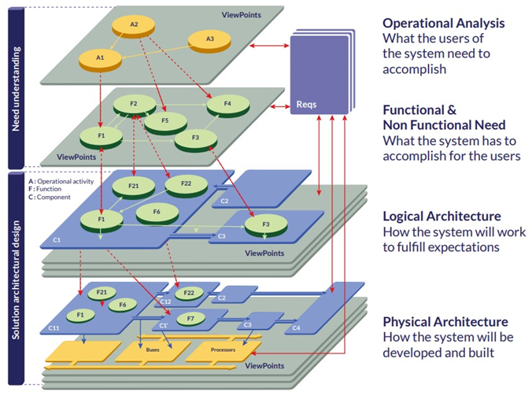
A noter que les termes et acronymes utilisés sont définis dans le glossaire en fin de document.
2. Analyse du Besoin Opérationnel (OA — Operational Analysis)
2.1. Contexte et objectif
L’Analyse du Besoin Opérationnel (OA) décrit le contexte métier réel d’une boutique en ligne, indépendamment de tout système à construire. Elle identifie les acteurs impliqués, leurs activités opérationnelles et les échanges entre eux.
La boutique repose sur trois acteurs distincts. L'administrateur est l’unique responsable de la gestion des comptes utilisateurs. Le vendeur (propriétaire du site) prend en charge l’ensemble des opérations commerciales : catalogue, stocks, commandes et expéditions. L'acheteur est le client final qui navigue et passe commande. La boutique propose une livraison à destination des pays de la zone euro, via un ou plusieurs services de transport externes. Les paiements sont traités par un prestataire de paiement externe et acceptés par carte bancaire ou virement bancaire. L’activation du compte acheteur s’effectue via un lien envoyé par un service de messagerie externe.
2.1.1. Acteurs opérationnels
| Acteur | Rôle | Responsabilités principales |
|---|---|---|
Administrateur |
Gestionnaire des comptes et des transporteurs |
Créer, suspendre et supprimer les comptes vendeur et acheteurs ; gérer les droits d’accès à la plateforme ; ajouter et gérer les transporteurs disponibles |
Vendeur |
Propriétaire et exploitant de la boutique |
Mettre à jour ses données de compte, gérer le catalogue produits, administrer les stocks, traiter les commandes reçues, gérer les expéditions vers les pays de la zone euro (déposer le colis auprès du transporteur, récupérer le numéro de suivi sur le reçu et le saisir dans la boutique), confirmer manuellement la réception des virements bancaires, consulter les rapports de ventes, traiter les litiges et réclamations, traiter les annulations après expédition en choisissant entre annulation avec condition de renvoi du colis ou annulation directe sans renvoi |
Acheteur |
Client de la boutique (résidant dans la zone euro) |
S’inscrire, activer son compte via le lien reçu par email, mettre à jour ses données de compte, parcourir le catalogue, sélectionner des produits, gérer et sauvegarder son panier, passer des commandes, effectuer les paiements (carte ou virement), choisir le mode de livraison, suivre et réceptionner les livraisons, annuler une commande en autonomie depuis son compte (avant expédition), demander un retour par email au vendeur (après expédition) |
Transporteur |
Service externe de livraison |
Prendre en charge les colis déposés physiquement par le vendeur, assurer la livraison dans les pays de la zone euro, fournir un numéro de suivi sur le reçu de dépôt, permettre le suivi en ligne via ce numéro |
Prestataire de paiement |
Système externe de traitement des paiements |
Recevoir les demandes de paiement, autoriser ou refuser les transactions, confirmer le règlement au vendeur, gérer les remboursements |
Service de messagerie |
Système externe de distribution d’emails |
Recevoir les demandes d’envoi de la boutique, acheminer les emails vers la boîte mail de l’acheteur (lien d’activation, confirmations, notifications) |
2.1.2. Contraintes opérationnelles
Les contraintes suivantes sont issues du contexte d’usage réel des acteurs et s’imposent indépendamment de toute décision d’architecture.
| Identifiant | Contrainte | Description |
|---|---|---|
COp-01 |
Interface responsive (PC / smartphone) |
Les acteurs interagissent avec la boutique depuis des environnements variés. L’acheteur utilise principalement un smartphone pour naviguer et passer commande. Le vendeur et l’administrateur opèrent depuis un ordinateur de bureau ou un ordinateur portable. L’interface doit s’adapter à toutes ces résolutions sans dégradation de l’expérience utilisateur. |
COp-02 |
Modes de paiement acceptés |
L’acheteur doit pouvoir régler ses commandes par carte bancaire ou par virement bancaire. Ces deux modes doivent être proposés lors du tunnel d’achat. Le paiement par carte est traité automatiquement via le prestataire externe ; le paiement par virement met la commande en attente de confirmation manuelle — le vendeur doit confirmer la réception effective des fonds avant que la commande ne soit prise en charge. |
COp-03 |
Persistance du panier entre sessions |
Le panier d’un acheteur authentifié est automatiquement sauvegardé sur son compte. À la reconnexion, le contenu du panier est restauré tel qu’il avait été laissé lors de la session précédente. |
COp-04 |
Activation de compte par email |
L’acheteur doit activer son compte en consultant sa boîte mail et en cliquant sur le lien qui lui est adressé après inscription. Le compte n’est accessible qu’après cette activation. |
2.2. Diagrammes de cas d’utilisation opérationnels
Les cas d’utilisation opérationnels sont répartis en trois vues focalisées, une par acteur principal de la boutique.
2.2.1. Vue Administrateur
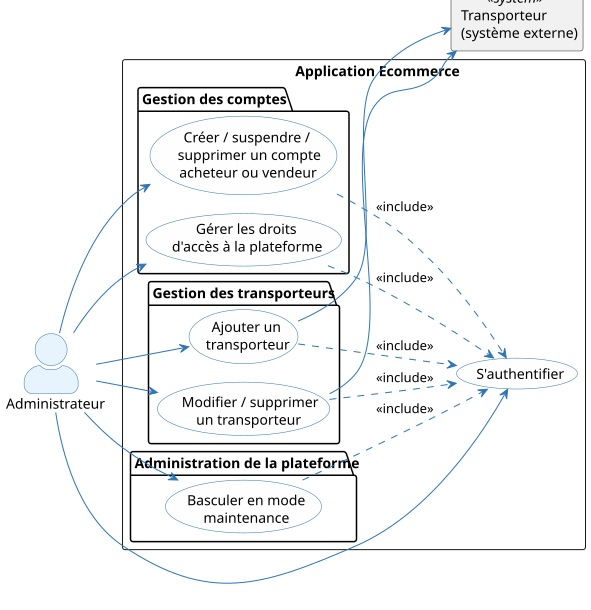
2.2.2. Vue Vendeur
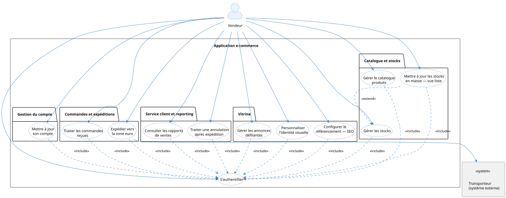
2.2.3. Vue Acheteur
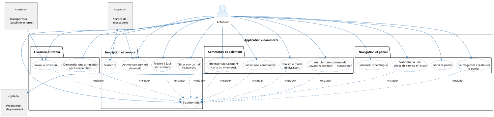
2.3. Diagramme d’activité opérationnel — Flux d’achat et de traitement
Ce diagramme modélise le flux de travail opérationnel complet, depuis l’inscription de l’acheteur jusqu’à la clôture de la commande.
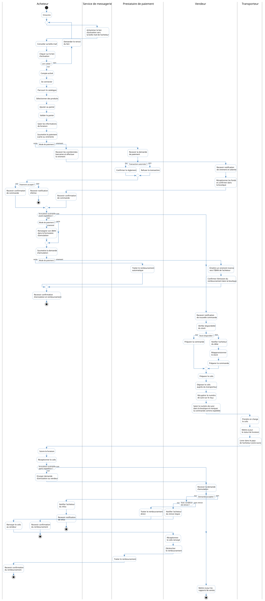
2.4. Diagramme de séquence opérationnel — Passation de commande
Ce diagramme représente les échanges chronologiques entre les acteurs lors du processus de commande, incluant l’activation de compte via le service de messagerie.
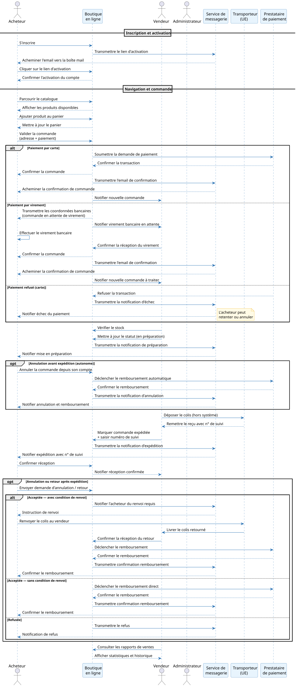
2.5. Synthèse des activités opérationnelles
2.5.1. Administrateur
| Activité | Description |
|---|---|
Gérer les comptes utilisateurs |
Créer, suspendre et supprimer les comptes du vendeur et des acheteurs ; gérer les droits d’accès à la plateforme |
Gérer les transporteurs |
Ajouter, modifier et supprimer les transporteurs disponibles sur la plateforme pour les expéditions zone euro |
Basculer en mode maintenance |
Activer ou désactiver le mode maintenance de la boutique ; lorsqu’il est actif, tout internaute non administrateur est redirigé vers une page « Site en maintenance » et les autres pages sont inaccessibles |
2.5.2. Vendeur
| Activité | Description |
|---|---|
Mettre à jour son compte |
Modifier ses informations personnelles (nom, adresse, mot de passe, coordonnées) |
Gérer le catalogue produits |
Créer, modifier et supprimer les fiches produits (photos, descriptions, prix, catégories) |
Gérer les stocks |
Suivre les niveaux de stock, anticiper les ruptures, effectuer les réapprovisionnements |
Traiter les commandes |
Prendre en charge les commandes reçues, vérifier le stock, préparer les colis |
Gérer les expéditions vers la zone euro |
Préparer le colis, le déposer auprès d’un transporteur (ex. La Poste), récupérer le numéro de suivi sur le reçu, puis saisir ce numéro dans la boutique pour marquer la commande comme expédiée et notifier l’acheteur |
Traiter les litiges et réclamations |
Répondre aux demandes de remboursement, gérer les retours produits |
Traiter une annulation après expédition |
Recevoir la demande d’annulation de l’acheteur ; accepter ou refuser la demande. En cas d’acceptation, choisir entre deux modalités : (1) avec condition de renvoi — notifier l’acheteur qu’il doit renvoyer le colis, attendre la réception du retour, puis déclencher le remboursement ; (2) sans condition de renvoi — déclencher le remboursement directement, sans exiger le retour du colis. Si le paiement initial était par virement bancaire, le remboursement ne peut pas être traité automatiquement par le prestataire : le vendeur doit émettre un virement inverse vers l’acheteur et confirmer l’émission dans la boutique. |
Émettre un virement inverse de remboursement |
Lorsqu’une commande réglée par virement est annulée (avant ou après expédition), effectuer un virement bancaire du montant de la commande vers le compte de l’acheteur, puis confirmer manuellement l’émission dans la boutique pour clôturer le remboursement. |
Confirmer la réception d’un virement bancaire |
Après réception effective des fonds sur le compte bancaire du vendeur, confirmer manuellement dans la boutique la réception du virement pour déclencher la prise en charge de la commande correspondante |
Consulter les rapports de ventes |
Analyser les performances commerciales, le chiffre d’affaires, les produits les plus vendus |
Gérer les annonces défilantes |
Créer, modifier et supprimer des annonces défilantes affichées sur la page d’accueil de la boutique (texte, lien, ordre d’affichage) |
2.5.3. Acheteur
| Activité | Description |
|---|---|
S’inscrire |
Créer un compte en saisissant ses informations personnelles |
Activer son compte via email |
Consulter sa boîte mail, ouvrir l’email reçu de la boutique et cliquer sur le lien d’activation pour rendre son compte opérationnel (COp-04) |
Se connecter |
S’authentifier pour accéder aux fonctionnalités d’achat |
Mettre à jour son compte |
Modifier ses informations personnelles (adresse de livraison, mot de passe, coordonnées) |
Parcourir le catalogue |
Rechercher, filtrer et consulter les produits disponibles |
Gérer le panier |
Ajouter, modifier la quantité ou retirer des produits du panier |
Sauvegarder / restaurer le panier |
Le panier est automatiquement sauvegardé sur le compte de l’acheteur ; à la reconnexion, son contenu est restauré tel quel |
Passer une commande |
Saisir l’adresse de livraison dans un pays de la zone euro, choisir le mode de livraison, valider la commande |
Effectuer un paiement |
Régler la commande par carte bancaire (autorisation immédiate) ou par virement bancaire (la commande reste en attente de la confirmation manuelle du vendeur jusqu’à réception effective des fonds) |
Suivre la livraison |
Consulter le statut d’expédition et le numéro de suivi du colis |
Annuler une commande (avant expédition) |
Depuis son espace compte, annuler une commande tant que le colis n’a pas encore été remis au transporteur ; le remboursement est déclenché automatiquement, sans intervention du vendeur |
Demander une annulation après expédition |
Contacter le vendeur pour demander l’annulation d’une commande déjà expédiée ; le vendeur décide d’accepter ou de refuser. En cas d’acceptation avec condition de renvoi : renvoyer le colis au vendeur avant d’obtenir le remboursement. En cas d’acceptation sans condition de renvoi : recevoir le remboursement directement sans obligation de renvoyer le colis. |
2.5.4. Transporteur (système externe)
| Activité | Description |
|---|---|
Prendre en charge le colis |
Réceptionner les colis déposés physiquement par le vendeur pour expédition vers un pays de la zone euro ; remettre un reçu avec numéro de suivi |
Acheminer et livrer dans la zone euro |
Assurer le transport et la livraison du colis à l’adresse de l’acheteur dans le pays de destination |
Permettre le suivi en ligne |
Mettre à disposition un service de suivi consultable par l’acheteur grâce au numéro de suivi fourni lors du dépôt |
2.5.5. Prestataire de paiement (système externe)
| Activité | Description |
|---|---|
Autoriser la transaction |
Recevoir la demande de paiement, vérifier les données bancaires et autoriser ou refuser la transaction |
Confirmer le règlement |
Notifier la boutique et le vendeur de la bonne réception des fonds |
Traiter un remboursement |
Reverser tout ou partie du montant à l’acheteur en cas de litige, retour ou annulation de commande |
2.5.6. Service de messagerie (système externe)
| Activité | Description |
|---|---|
Acheminer le lien d’activation |
Recevoir la demande d’envoi de la boutique et délivrer à l’acheteur l’email contenant le lien d’activation de son compte (COp-04) |
Acheminer les notifications |
Délivrer à l’acheteur les emails de confirmation de commande, d’expédition, d’annulation et toute autre notification générée par la boutique |
3. Analyse Système (SA — System Analysis)
3.1. Contexte et objectif
L’Analyse Système (SA) décrit le système de boutique en ligne du point de vue des fonctions que le logiciel doit remplir, sans encore choisir de composants d’implémentation. Elle traduit les besoins opérationnels (OA) en exigences système, en identifiant les fonctions du système, leurs interfaces avec les acteurs externes et les contraintes techniques à respecter.
La SA repose sur les trois principes ARCADIA suivants :
-
Décrire ce que le système fait, non comment il le fait.
-
Allouer chaque besoin opérationnel à une ou plusieurs fonctions système.
-
Identifier les échanges entre le système et les acteurs externes (flux, données, événements).
| Le système couvre l’ensemble des interactions numériques entre les six acteurs de la boutique : Administrateur, Vendeur, Acheteur, Transporteur (externe), Prestataire de paiement (externe) et Service de messagerie (externe). Les trois acteurs externes sont des systèmes tiers ; le système ne les implémente pas, mais définit les interfaces d’échange avec eux. |
3.1.1. Acteurs système et interfaces
| Acteur | Type | Rôle système | Interfaces principales |
|---|---|---|---|
Administrateur |
Humain — interne |
Gestion des comptes et des transporteurs |
Interface d’administration back-office (web) |
Vendeur |
Humain — interne |
Exploitation commerciale de la boutique |
Interface vendeur back-office (web) |
Acheteur |
Humain — externe |
Navigation, achat, suivi de commande |
Interface acheteur front-office (web responsive / mobile) |
Transporteur |
Système externe |
Prise en charge et livraison des colis |
Site de suivi (IFS-05) — lien web sortant consulté par l’acheteur |
Prestataire de paiement |
Système externe |
Autorisation et confirmation des transactions |
API de paiement carte / virement (IFS-04) |
Service de messagerie |
Système externe |
Acheminement des emails transactionnels (activation de compte, notifications) |
SMTP / SMS Gateway — sortant (IFS-06) |
3.2. Contraintes système
Les contraintes opérationnelles (COp) de l’OA sont traduites en contraintes système (CS) imposées au logiciel.
| Identifiant | Contrainte système | Description |
|---|---|---|
CS-01 |
Interface responsive |
Le système doit fournir une interface adaptée aux résolutions desktop et mobile (min. 320 px) sans dégradation fonctionnelle — issu de COp-01. |
CS-02 |
Modes de paiement |
Le système doit proposer deux modes de paiement lors du tunnel d’achat : carte bancaire (autorisation immédiate via l’API du prestataire) et virement bancaire (la commande est créée en état |
CS-03 |
Persistance du panier |
Le système doit persister le panier d’un acheteur authentifié en base et le restaurer intégralement à chaque reconnexion — issu de COp-03. |
CS-04 |
Livraison zone euro uniquement |
Le système doit restreindre la saisie d’adresse de livraison aux pays de la zone euro. |
CS-05 |
Numéro de suivi et lien transporteur |
Le système doit permettre au vendeur de saisir manuellement le numéro de suivi récupéré lors du dépôt physique du colis, et afficher ce numéro accompagné du lien vers le site de suivi du transporteur dans l’espace commandes de l’acheteur. |
CS-06 |
Journalisation financière |
Le système doit journaliser toutes les transactions financières (paiement, remboursement) à des fins d’audit. |
CS-07 |
Activation de compte par email |
À l’issue de l’inscription, le système doit envoyer automatiquement un email contenant un lien d’activation tokenisé à usage unique. Le compte est activé uniquement sur clic de ce lien. Le token doit avoir une durée de validité limitée (ex. 24 h) au-delà de laquelle un renvoi est possible. |
CS-08 |
TokenAuthentification |
L’accès aux back-offices vendeur et administrateur est conditionné à une authentification par email et mot de passe ; le système émet un jeton d’authentification que le client présente à chaque requête protégée. Un compte suspendu ou supprimé ne peut pas s’authentifier. Les messages d’erreur ne distinguent pas un email inconnu d’un mot de passe incorrect (sécurité contre l’énumération de comptes). |
CS-09 |
Prix TTC — pas de TVA |
Tous les prix affichés sur la boutique sont exprimés en TTC. Aucune TVA n’est calculée ni affichée en sus ; le prix saisi par le vendeur est le prix final payé par l’acheteur. |
CS-10 |
Préférence de langue par compte |
Chaque compte (acheteur, vendeur) dispose d’une préférence de langue ( |
3.3. Exigences fonctionnelles système
Les fonctions système (FS) sont dérivées des cas d’utilisation opérationnels de l’OA et allouées à chaque acteur.
3.3.1. Gestion des comptes (Administrateur)
| ID | Fonction système | Origine UC (OA) |
|---|---|---|
FS-A01 |
Créer, suspendre et supprimer les comptes vendeur et acheteur ; à la création, le compte est en statut |
UC_A1 |
FS-A02 |
Gérer les droits d’accès (rôles) sur la plateforme |
UC_A1 |
FS-A03 |
Ajouter, modifier et supprimer les transporteurs disponibles |
UC_A2 |
FS-A04 |
Permettre à l’administrateur de modifier son mot de passe |
UC_A_ACC |
FS-A05 |
Basculer en mode maintenance de la plateforme : activer ou désactiver la redirection de tous les internautes non administrateurs vers la page « Site en maintenance » |
UC_A3 |
FS-A06 |
Configurer la langue de notification d’un compte vendeur ou acheteur — à la création et en modification ultérieure — parmi les valeurs supportées : |
UC_A1 |
3.3.2. Gestion de la boutique (Vendeur)
| ID | Fonction système | Origine UC (OA) |
|---|---|---|
FS-V01 |
Permettre au vendeur de mettre à jour ses données de compte, y compris sa préférence de langue de notification (CS-10) |
UC_V0 |
FS-V02 |
Gérer le catalogue produits — CRUD : photos, descriptions, prix, catégories |
UC_V1 |
FS-V03 |
Gérer les niveaux de stock et alerter en cas de rupture imminente |
UC_V2 |
FS-V04 |
Recevoir et traiter les nouvelles commandes (notification, vérification stock) |
UC_V3 |
FS-V05 |
Permettre au vendeur de déclarer l’expédition d’une commande en saisissant le numéro de suivi récupéré sur le reçu de dépôt physique ; passer la commande en état |
UC_V4 |
FS-V06 |
Traiter les litiges et réclamations (remboursement, retour) |
UC_V5 |
FS-V07 |
Consulter les rapports de ventes (CA, produits, historique) |
UC_V6 |
FS-V08 |
Traiter les demandes d’annulation après expédition : accepter ou refuser ; en cas d’acceptation, choisir entre annulation avec condition de renvoi ou annulation directe sans renvoi |
UC_V7 |
FS-V09 |
Confirmer manuellement la réception d’un virement bancaire et déclencher la prise en charge de la commande correspondante |
— |
FS-V10 |
Confirmer l’émission d’un virement inverse de remboursement vers l’acheteur à la suite d’une annulation de commande réglée par virement bancaire |
UC_V7 |
FS-V11 |
Créer, modifier, réordonner et supprimer les annonces défilantes affichées sur la page d’accueil ; chaque annonce comporte un contenu texte, une image ou les deux, et un lien de redirection optionnel au clic |
UC_V9 |
3.3.3. Expérience d’achat (Acheteur)
| ID | Fonction système | Origine UC (OA) |
|---|---|---|
FS-B01 |
Gérer l’inscription de l’acheteur et envoyer un email d’activation avec lien tokenisé |
UC_B0 |
FS-B10 |
Valider et activer le compte acheteur sur clic du lien d’activation (token à usage unique, expirant) |
UC_B0 |
FS-B02 |
Permettre à l’acheteur de mettre à jour ses données de compte, y compris sa préférence de langue de notification (CS-10) |
UC_B_ACC |
FS-B03 |
Afficher et filtrer le catalogue produits disponibles |
UC_B1 |
FS-B04 |
Gérer le panier (ajout, modification de quantité, suppression) |
UC_B2 |
FS-B05 |
Sauvegarder et restaurer le panier entre sessions (CS-03) |
UC_B2B |
FS-B06 |
Orchestrer le tunnel d’achat (adresse, mode de livraison, validation) |
UC_B3 / UC_B4B |
FS-B07 |
Soumettre le paiement au prestataire externe — carte ou virement (CS-02) |
UC_B4 |
FS-B08 |
Afficher le numéro de suivi et le lien vers le site du transporteur dans l’espace commandes |
UC_B5 |
FS-B09 |
Permettre l’annulation d’une commande avant expédition |
UC_B6 |
3.3.4. Interfaces externes
| ID | Fonction système | Origine UC (OA) |
|---|---|---|
FS-P01 |
Soumettre une demande d’autorisation de transaction au prestataire de paiement |
UC_P1 |
FS-P02 |
Recevoir la confirmation ou le refus de transaction et notifier les parties |
UC_P2 |
FS-P03 |
Annuler une transaction et déclencher un remboursement via le prestataire de paiement |
UC_P3 |
FS-C01 |
Afficher à l’acheteur le numéro de suivi et l’URL du site de suivi du transporteur depuis son espace commandes |
UC_C3 |
3.4. Diagramme de cas d’utilisation système
Ce diagramme présente les cas d’utilisation système (UCSA), dérivés des cas opérationnels, du point de vue des interactions avec le système logiciel.
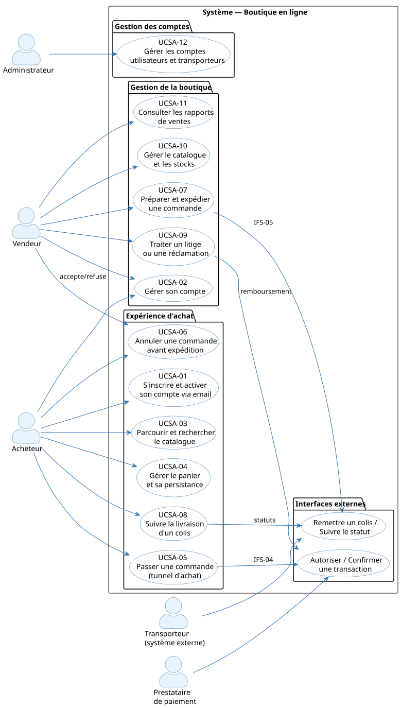
3.5. Cas d’utilisation système — Descriptions détaillées
3.5.1. UCSA-01 : S’inscrire et activer son compte via email
| Champ | Description |
|---|---|
Identifiant |
UCSA-01 |
Acteurs |
Acheteur (principal) ; Service de notification email — IFS-06 (secondaire) |
Préconditions |
Aucun compte existant avec cette adresse email |
Déclencheur |
L’acheteur soumet le formulaire d’inscription |
Scénario nominal |
|
Scénarios alternatifs |
|
Postconditions |
Compte acheteur actif ; l’acheteur peut s’authentifier et accéder aux fonctionnalités d’achat. |
Exigences liées |
FS-B01, FS-B10, CS-07, IFS-06 |
3.5.2. UCSA-05 : Passer une commande (tunnel d’achat)
| Champ | Description |
|---|---|
Identifiant |
UCSA-05 |
Acteurs |
Acheteur (principal) ; Prestataire de paiement (secondaire) |
Préconditions |
Acheteur authentifié ; panier non vide ; adresse de livraison dans un pays de la zone euro |
Déclencheur |
L’acheteur clique sur « Valider le panier » |
Scénario nominal (carte bancaire) |
|
Scénario alternatif — virement bancaire |
|
Scénarios alternatifs — erreurs |
|
Postconditions |
Commande créée en base ; paiement autorisé (carte) ou en attente de confirmation vendeur (virement) ; vendeur notifié ; stock réservé. |
Exigences liées |
FS-B06, FS-B07, FS-P01, FS-P02, FS-V09, CS-02, CS-04 |
3.5.3. UCSA-06 : Annuler une commande (avant ou après expédition)
| Champ | Description |
|---|---|
Identifiant |
UCSA-06 |
Acteurs |
Acheteur (principal) ; Vendeur (secondaire — post-expédition uniquement) ; Prestataire de paiement (secondaire) |
Préconditions |
Commande existante dans l’état |
Déclencheur |
L’acheteur soumet une demande d’annulation depuis son espace commandes |
Scénario nominal — annulation avant expédition, paiement par carte |
|
Scénario alternatif — annulation avant expédition, paiement par virement |
|
Scénario alternatif — annulation après expédition, avec condition de renvoi |
|
Scénario alternatif — annulation après expédition, sans condition de renvoi |
|
Scénarios d’erreur |
|
Postconditions |
Commande en état |
Exigences liées |
FS-B09, FS-V08, FS-P03, FS-V10 |
3.5.4. UCSA-02 : Gérer son compte
| Champ | Description |
|---|---|
Identifiant |
UCSA-02 |
Acteurs |
Acheteur ou Vendeur (principal) ; Administrateur (secondaire — mot de passe uniquement) |
Préconditions |
Utilisateur authentifié |
Déclencheur |
L’utilisateur accède à la section « Mon compte » |
Scénario nominal |
|
Scénarios alternatifs |
|
Postconditions |
Données du compte mises à jour en base. |
Exigences liées |
FS-V01, FS-B02, FS-A04 |
3.5.5. UCSA-03 : Parcourir et rechercher le catalogue
| Champ | Description |
|---|---|
Identifiant |
UCSA-03 |
Acteurs |
Acheteur (principal) |
Préconditions |
Aucune — accessible sans authentification |
Déclencheur |
L’acheteur accède à la page catalogue ou saisit un terme de recherche |
Scénario nominal |
|
Scénarios alternatifs |
|
Postconditions |
Liste de produits affichée ; l’acheteur peut ajouter un produit au panier. |
Exigences liées |
FS-B03 |
3.5.6. UCSA-04 : Gérer le panier et sa persistance
| Champ | Description |
|---|---|
Identifiant |
UCSA-04 |
Acteurs |
Acheteur (principal) |
Préconditions |
Acheteur authentifié |
Déclencheur |
L’acheteur ajoute, modifie ou supprime un produit du panier |
Scénario nominal |
|
Scénarios alternatifs |
|
Postconditions |
Panier mis à jour et persisté en base ; restaurable à la prochaine session. |
Exigences liées |
FS-B04, FS-B05, CS-03 |
3.5.7. UCSA-07 : Préparer et expédier une commande
| Champ | Description |
|---|---|
Identifiant |
UCSA-07 |
Acteurs |
Vendeur (principal) |
Préconditions |
Commande en état « en_préparation » |
Déclencheur |
Le vendeur a déposé le colis au point de dépôt du transporteur et dispose du numéro de suivi inscrit sur le reçu |
Scénario nominal |
|
Scénarios alternatifs |
|
Postconditions |
Commande en état |
Exigences liées |
FS-V03, FS-V04, FS-V05, CS-04, CS-05 |
3.5.8. UCSA-08 : Suivre la livraison d’un colis
| Champ | Description |
|---|---|
Identifiant |
UCSA-08 |
Acteurs |
Acheteur (principal) |
Préconditions |
Commande en état « expédiée » ; numéro de suivi enregistré en base |
Déclencheur |
L’acheteur consulte le suivi de sa commande depuis son espace commandes |
Scénario nominal |
|
Scénarios alternatifs |
|
Postconditions |
L’acheteur dispose du numéro de suivi et peut consulter l’acheminement sur le site du transporteur. |
Exigences liées |
FS-B08, FS-C01, CS-05 |
3.5.9. UCSA-09 : Traiter un litige ou une réclamation
| Champ | Description |
|---|---|
Identifiant |
UCSA-09 |
Acteurs |
Acheteur (principal) ; Vendeur (secondaire) ; Prestataire de paiement (secondaire) |
Préconditions |
Commande livrée ou annulée ; réclamation non encore ouverte pour cette commande |
Déclencheur |
L’acheteur soumet une réclamation depuis son espace commandes |
Scénario nominal |
|
Scénarios alternatifs |
|
Postconditions |
Réclamation clôturée ; remboursement déclenché si applicable. |
Exigences liées |
FS-V06, FS-P03, IFS-04 |
3.5.10. UCSA-10 : Gérer le catalogue et les stocks
| Champ | Description |
|---|---|
Identifiant |
UCSA-10 |
Acteurs |
Vendeur (principal) |
Préconditions |
Vendeur authentifié |
Déclencheur |
Le vendeur accède au back-office catalogue ou stocks |
Scénario nominal |
|
Scénarios alternatifs |
|
Postconditions |
Catalogue et stocks mis à jour ; les acheteurs voient le catalogue actualisé. |
Exigences liées |
FS-V02, FS-V03 |
3.5.11. UCSA-11 : Consulter les rapports de ventes
| Champ | Description |
|---|---|
Identifiant |
UCSA-11 |
Acteurs |
Vendeur (principal) |
Préconditions |
Vendeur authentifié |
Déclencheur |
Le vendeur accède à la section « Rapports » du back-office |
Scénario nominal |
|
Scénarios alternatifs |
|
Postconditions |
Rapport affiché ; aucune modification des données métier. |
Exigences liées |
FS-V07 |
3.5.12. UCSA-12 : Gérer les comptes utilisateurs et transporteurs
| Champ | Description |
|---|---|
Identifiant |
UCSA-12 |
Acteurs |
Administrateur (principal) |
Préconditions |
Administrateur authentifié |
Déclencheur |
L’administrateur accède à la console d’administration |
Scénario nominal |
|
Scénarios alternatifs |
|
Postconditions |
Comptes et transporteurs mis à jour ; modifications effectives immédiatement. |
Exigences liées |
FS-A01, FS-A02, FS-A03 |
3.5.13. UCSA-13 : Confirmer la réception d’un virement bancaire
| Champ | Description |
|---|---|
Identifiant |
UCSA-13 |
Acteurs |
Vendeur (principal) ; Prestataire de paiement (secondaire) |
Préconditions |
Commande existante en état |
Déclencheur |
Le vendeur constate la réception des fonds sur son compte bancaire et souhaite valider la commande correspondante |
Scénario nominal |
|
Scénarios alternatifs |
|
Postconditions |
Commande en état |
Exigences liées |
FS-V09, CS-02 |
3.5.14. UCSA-14 : Basculer en mode maintenance
| Champ | Description |
|---|---|
Identifiant |
UCSA-14 |
Acteurs |
Administrateur (principal) |
Préconditions |
Administrateur authentifié |
Déclencheur |
L’administrateur souhaite activer ou désactiver le mode maintenance de la boutique |
Scénario nominal — Activation |
|
Scénario nominal — Désactivation |
|
Scénarios alternatifs |
|
Postconditions |
État de maintenance mis à jour ; internautes redirigés ou non selon l’état actif. |
Exigences liées |
FS-A05 |
3.5.15. UCSA-15 : Gérer les annonces défilantes
| Champ | Description |
|---|---|
Identifiant |
UCSA-15 |
Acteurs |
Vendeur (principal) |
Préconditions |
Vendeur authentifié |
Déclencheur |
Le vendeur souhaite publier, modifier ou retirer une annonce défilante sur la page d’accueil |
Scénario nominal |
|
Scénarios alternatifs |
|
Postconditions |
La page d’accueil affiche le carrousel mis à jour. |
Exigences liées |
FS-V11 |
3.6. Diagramme d’activité système — Flux de commande complet
Ce diagramme modélise le flux système de bout en bout, depuis la connexion de l’acheteur jusqu’à la clôture de la commande, en faisant apparaître les échanges avec les systèmes externes.
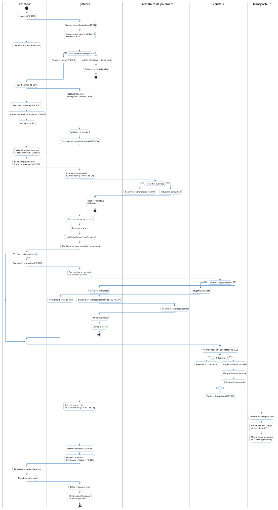
3.7. Diagramme de séquence système — Passation de commande
Ce diagramme représente les échanges chronologiques entre les acteurs et le système lors du flux de commande nominal, en mettant en évidence les interfaces externes (IFS-04 et IFS-05).
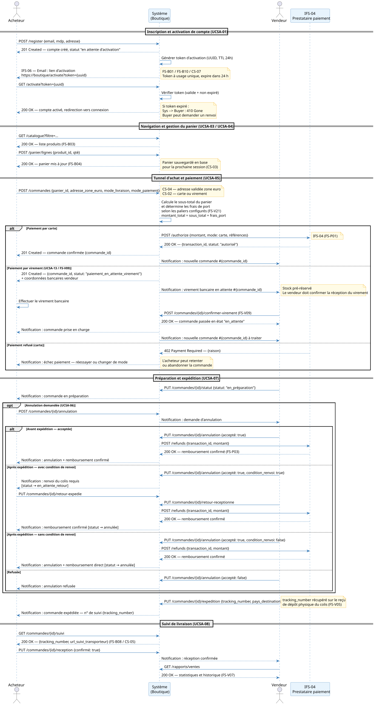
3.8. Diagramme de classes logique — Modèle de données système
Ce diagramme représente les entités manipulées par le système, leurs attributs principaux et leurs relations. Il constitue le modèle de données logique de la SA, indépendant de toute technologie de persistance.
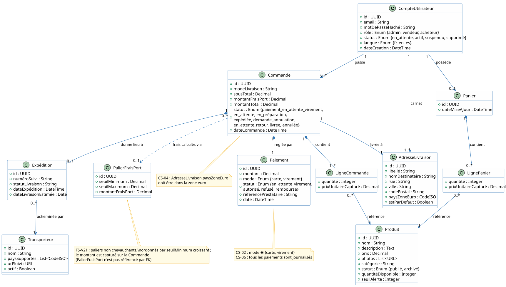
3.9. Interfaces système (IFS)
| Identifiant | Interface | Type / Canal | Données échangées |
|---|---|---|---|
IFS-01 |
Portail acheteur (front-office) |
Web responsive HTTPS (CS-01) |
Catalogue, panier, tunnel d’achat, suivi commande, profil |
IFS-02 |
Back-office vendeur |
Web HTTPS — desktop-first |
Catalogue, stocks, commandes, expéditions, rapports de ventes |
IFS-03 |
Back-office administrateur |
Web HTTPS — desktop-first |
Comptes utilisateurs, transporteurs |
IFS-04 |
API prestataire de paiement |
REST/HTTPS — appel sortant + webhook entrant |
Demande d’autorisation, confirmation de transaction, déclenchement de remboursement |
IFS-05 |
Site de suivi transporteur |
Lien web — sortant (côté acheteur) |
L’acheteur utilise le numéro de suivi pour consulter l’acheminement directement sur le site du transporteur ; aucun appel API entre le système et le transporteur |
IFS-06 |
Notifications email / SMS |
SMTP / SMS Gateway — sortant |
Confirmation de commande, expédition, annulation, alerte de rupture de stock |
3.10. Diagramme de composants système
Ce diagramme identifie les grands blocs fonctionnels du système et leurs dépendances, sans préjuger de l’architecture technique retenue lors de la LA (Logical Architecture).
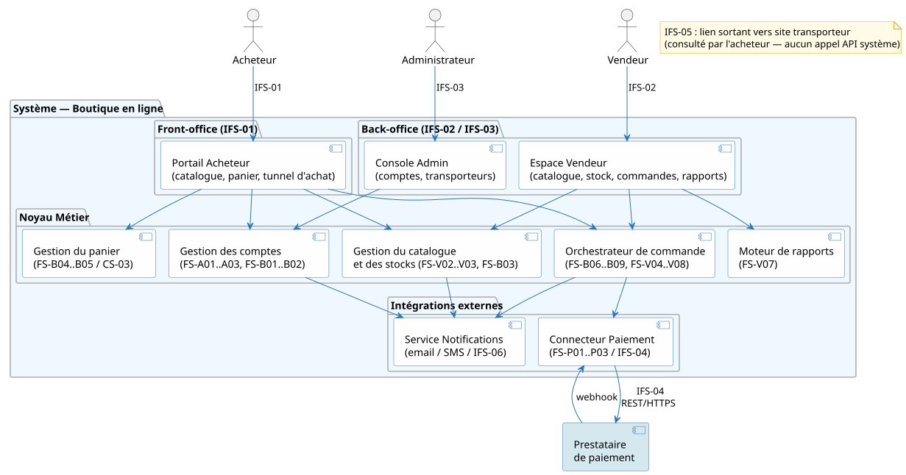
3.11. Matrice de traçabilité OA → SA
La matrice ci-dessous assure la couverture complète de chaque besoin opérationnel de l’OA par au moins une exigence ou fonction système de la SA.
| UC / COp (OA) | Besoin opérationnel | Fonctions SA | UCSA |
|---|---|---|---|
UC_A1 |
Gérer les comptes utilisateurs |
FS-A01, FS-A02, FS-A06 |
UCSA-12 |
UC_A2 |
Gérer les transporteurs |
FS-A03 |
UCSA-12 |
UC_A3 |
Basculer en mode maintenance |
FS-A05 |
UCSA-14 |
UC_A_ACC |
Modifier son mot de passe (administrateur) |
FS-A04 |
UCSA-02 |
UC_B0 |
S’inscrire / activer son compte via lien email |
FS-B01, FS-B10, CS-07 |
UCSA-01, UCSA-02 |
UC_B_ACC |
Mettre à jour son compte (acheteur), dont la langue de notification (CS-10) |
FS-B02 |
UCSA-02 |
UC_B1 |
Parcourir le catalogue |
FS-B03 |
UCSA-03 |
UC_B2 / UC_B2B |
Gérer et persister le panier |
FS-B04, FS-B05 |
UCSA-04 |
UC_B3 / UC_B4B |
Passer une commande / choisir la livraison |
FS-B06 |
UCSA-05 |
UC_B4 |
Effectuer un paiement |
FS-B07, FS-P01, FS-P02 |
UCSA-05 |
UC_B5 |
Suivre la livraison (numéro de suivi + lien site transporteur) |
FS-B08, FS-C01 |
UCSA-08 |
UC_B6 / UC_V7 |
Annuler une commande |
FS-B09, FS-V08, FS-P03 |
UCSA-06 |
UC_V0 |
Mettre à jour son compte (vendeur), dont la langue de notification (CS-10) |
FS-V01 |
UCSA-02 |
UC_V9 |
Gérer les annonces défilantes |
FS-V11 |
UCSA-15 |
UC_V1 |
Gérer le catalogue produits |
FS-V02 |
UCSA-10 |
UC_V2 |
Gérer les stocks |
FS-V03 |
UCSA-10 |
UC_V3 |
Traiter les commandes reçues |
FS-V04 |
UCSA-07 |
UC_V4 |
Expédier vers la zone euro — dépôt physique + saisie manuelle du numéro de suivi |
FS-V05 |
UCSA-07 |
UC_V5 |
Traiter les litiges et réclamations |
FS-V06, FS-P03 |
UCSA-09 |
UC_V6 |
Consulter les rapports de ventes |
FS-V07 |
UCSA-11 |
— |
Confirmer réception d’un virement bancaire |
FS-V09 |
UCSA-13 |
— |
Annulation après expédition avec/sans condition de renvoi |
FS-V08 |
UCSA-06 |
COp-01 |
Interface responsive |
CS-01 |
— |
COp-02 |
Modes de paiement carte / virement |
CS-02, CS-06 |
UCSA-05 |
COp-03 |
Persistance du panier entre sessions |
CS-03, FS-B05 |
UCSA-04 |
— |
Activation de compte par lien email |
CS-07, FS-B01, FS-B10 |
UCSA-01 |
4. Architecture Logique (LA — Logical Architecture)
4.1. Contexte et objectif
L’Architecture Logique (LA) définit la décomposition interne du système en composants logiques cohérents, leurs responsabilités, leurs interfaces et leurs interactions. Elle répond à la question : comment le système est-il structuré pour remplir les fonctions identifiées en SA ?
La LA ne choisit pas encore de technologies d’implémentation (langages, frameworks, bases de données) — c’est le rôle de la PA (Physical Architecture). Elle pose les frontières architecturales stables sur lesquelles la PA s’appuiera.
| Chaque composant logique de la LA est tracé vers une ou plusieurs fonctions système (FS) de la SA. Les interfaces logiques (IFL) précisent les contrats d’échange entre composants, indépendamment du protocole de transport retenu en PA. |
4.1.1. Principes architecturaux retenus
-
Séparation des responsabilités — chaque composant a une responsabilité unique et cohérente.
-
Couplage faible — les composants communiquent via des interfaces contractuelles explicites (IFL).
-
Traçabilité SA → LA — toute fonction système (FS) est allouée à exactement un composant logique.
-
Isolation des systèmes externes — les intégrations tierces (paiement, transporteur, messagerie) sont encapsulées dans des composants dédiés de type adaptateur.
4.2. Décomposition en composants logiques
Le système est structuré en cinq couches logiques : Présentation, Application, Domaine, Infrastructure et Intégrations externes.
4.2.1. Vue d’ensemble des composants
| Composant | Couche | Responsabilité | Fonctions SA allouées |
|---|---|---|---|
Portail Acheteur |
Présentation |
Interface web responsive — catalogue, panier, tunnel d’achat, suivi de commande, profil acheteur |
FS-B01..B10 |
Back-office Vendeur |
Présentation |
Interface web desktop — gestion catalogue, stocks, commandes, expéditions, rapports |
FS-V01..V09 |
Console Administrateur |
Présentation |
Interface web desktop — gestion des comptes, des transporteurs |
FS-A01..A03 |
Service Compte |
Application |
Inscription, activation par token email, authentification, gestion du profil, gestion des rôles |
FS-B01, FS-B02, FS-B10, FS-A01, FS-A02 |
Service Catalogue |
Application |
CRUD produits, gestion des catégories, recherche et filtrage, publication / archivage, suivi des niveaux de stock, réservation à la commande, libération à l’annulation, alertes de rupture |
FS-V02, FS-V03, FS-B03 |
Service Commande |
Application |
Orchestration du tunnel d’achat, création et cycle de vie des commandes (états : |
FS-B06, FS-B09, FS-V04, FS-V07, FS-V08 |
Service Panier |
Application |
Gestion du panier en session et persistance inter-sessions, restauration à la reconnexion |
FS-B04, FS-B05 |
Service Paiement |
Application |
Soumission des demandes d’autorisation (carte), gestion des paiements par virement en attente de confirmation manuelle (FS-V09), traitement des confirmations et refus, déclenchement des remboursements carte via le prestataire (FS-P03), coordination des virements inverses de remboursement pour les paiements par virement (FS-V10), journalisation |
FS-B07, FS-P01, FS-P02, FS-P03, FS-V09, FS-V10 |
Service Expédition |
Application |
Déclaration d’expédition avec saisie obligatoire du numéro de suivi récupéré lors du dépôt physique, enregistrement et exposition du numéro de suivi à l’acheteur, gestion des retours de colis (état |
FS-V05, FS-C01, FS-B08 |
Service Notification |
Application |
Émission de toutes les notifications sortantes (email d’activation, confirmations, alertes) ; sélection de la langue du template selon la préférence |
FS-B01 (token), FS-B10 (activation), FS-A06, notifications liées à FS-V04, FS-P02, FS-V05 |
Service Rapport |
Application |
Agrégation des données de ventes, génération des rapports et statistiques |
FS-V07 |
Adaptateur Paiement |
Intégration externe |
Encapsulation du protocole IFS-04 — traduction des appels internes vers l’API du prestataire de paiement et des webhooks entrants |
FS-P01, FS-P02, FS-P03 |
Adaptateur Messagerie |
Intégration externe |
Encapsulation du protocole IFS-06 — envoi des emails via le service de messagerie externe |
FS-B01, toutes notifications |
Référentiel de données |
Infrastructure |
Persistance de toutes les entités métier (comptes, produits avec stock, paniers, commandes, paiements, expéditions, réclamations) |
Support de toutes les FS |
4.3. Diagramme de composants logiques
Ce diagramme représente l’architecture logique complète du système, les cinq couches, les composants et leurs interfaces logiques (IFL).
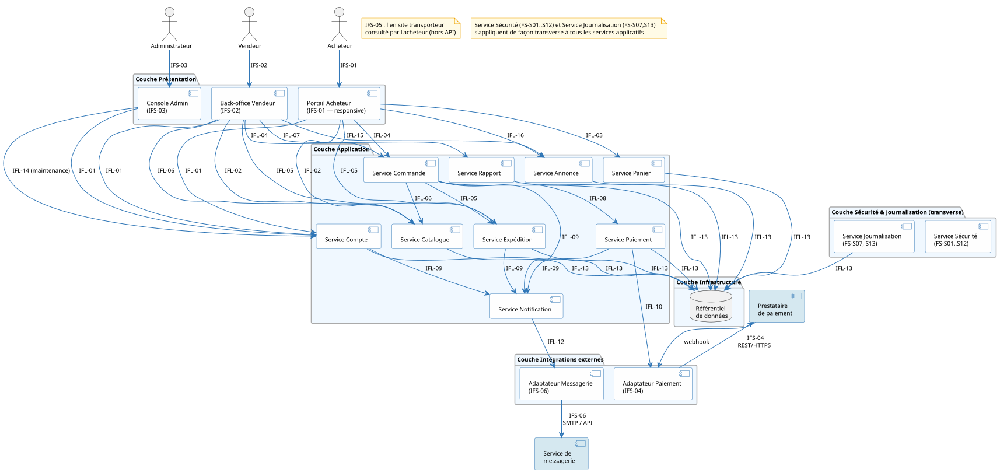
4.4. Interfaces logiques (IFL)
Les interfaces logiques définissent les contrats d’échange entre composants, indépendamment du protocole technique retenu en PA.
| Identifiant | Émetteur | Récepteur | Données / opérations | FS SA couvertes |
|---|---|---|---|---|
IFL-01 |
Portails (UI) |
Service Compte |
Inscription, activation token, authentification, mise à jour profil, gestion rôles, gestion transporteurs |
FS-B01, FS-B02, FS-B10, FS-A01..A03 |
IFL-02 |
Portails (UI) |
Service Catalogue |
Lister produits, rechercher, filtrer, CRUD produits et catégories |
FS-B03, FS-V02 |
IFL-03 |
Portail Acheteur |
Service Panier |
Ajouter / modifier / supprimer une ligne, obtenir le panier courant, restaurer le panier sauvegardé |
FS-B04, FS-B05 |
IFL-04 |
Portails (UI) |
Service Commande |
Créer une commande, lister les commandes, mettre à jour le statut, demander une annulation (avec flag |
FS-B06, FS-B09, FS-V04, FS-V08 |
IFL-05 |
Portails (UI) / Service Commande |
Service Expédition |
Déclarer une expédition (avec |
FS-V05, FS-C01, FS-B08 |
IFL-06 |
Service Commande / Portail Vendeur |
Service Catalogue |
Réserver du stock, libérer du stock, interroger les niveaux, déclencher une alerte rupture |
FS-V03 |
IFL-07 |
Back-office Vendeur |
Service Rapport |
Obtenir les agrégats de ventes, l’historique, les statistiques produits |
FS-V07 |
IFL-08 |
Service Commande |
Service Paiement |
Demander une autorisation (carte), enregistrer un virement en attente, confirmer la réception d’un virement (FS-V09), demander un remboursement, interroger le statut d’un paiement |
FS-P01, FS-P02, FS-P03, FS-V09 |
IFL-09 |
Services (Commande, Compte, Paiement, Expédition) |
Service Notification |
Émettre une notification (type, destinataire, données variables, langue du destinataire issue de |
Toutes notifications |
IFL-10 |
Service Paiement |
Adaptateur Paiement |
Autoriser transaction, rembourser, interroger statut — traduit vers IFS-04 |
FS-P01, FS-P02, FS-P03 |
IFL-12 |
Service Notification |
Adaptateur Messagerie |
Envoyer un email (destinataire, template localisé, variables) — sélection du template selon la langue du destinataire (CS-10) — traduit vers IFS-06 |
FS-B01, toutes notifications email |
IFL-13 |
Services applicatifs |
Référentiel de données |
CRUD sur toutes les entités du modèle de données logique (SA §5) |
Support de toutes les FS |
4.5. Diagramme de séquence logique — Inscription et activation de compte
Ce diagramme illustre les interactions entre composants logiques lors du flux d’inscription et d’activation de compte acheteur (UCSA-01).
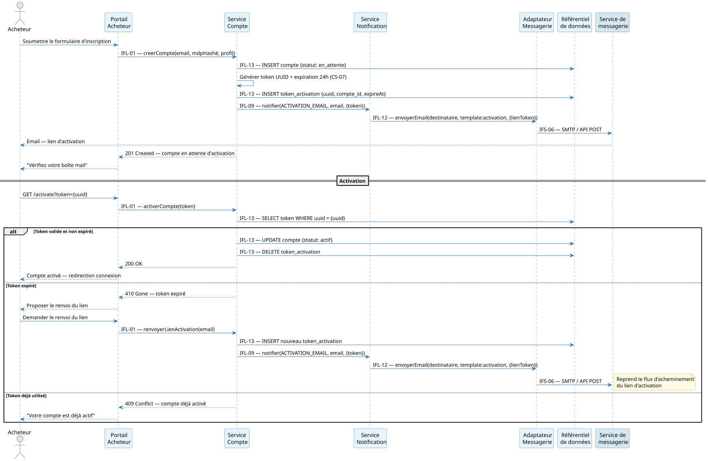
4.6. Diagramme de séquence logique — Tunnel d’achat et paiement
Ce diagramme illustre les interactions entre composants logiques lors de la passation d’une commande (UCSA-05).
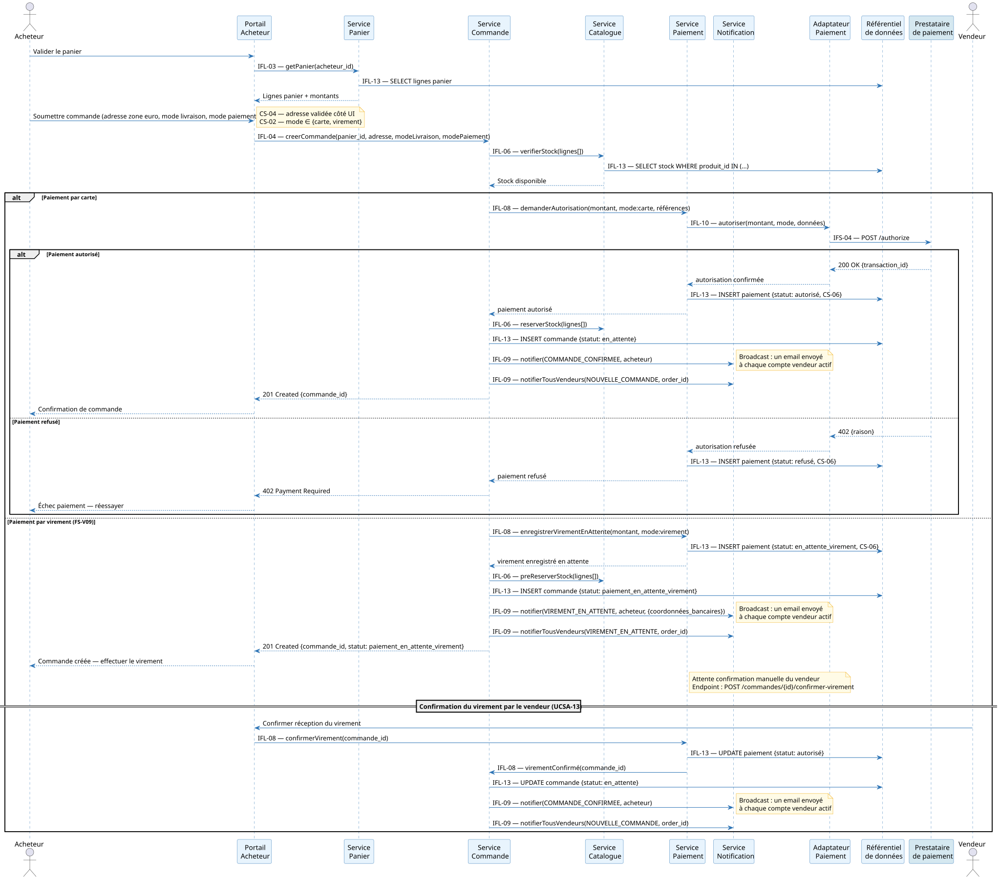
4.7. Diagramme de séquence logique — Expédition et suivi
Ce diagramme illustre les interactions entre composants logiques lors de l’expédition d’une commande et du suivi de livraison (UCSA-07 / UCSA-08).
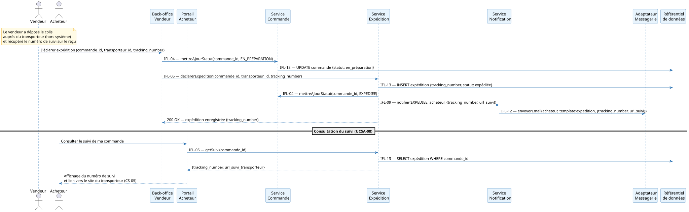
4.8. Diagramme d’états — Cycle de vie d’une commande
Ce diagramme représente les états possibles d’une commande et les transitions déclenchées par les composants logiques.
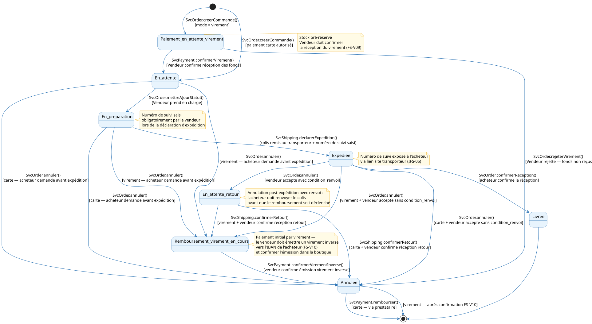
4.9. Diagramme d’états — Cycle de vie d’un compte acheteur
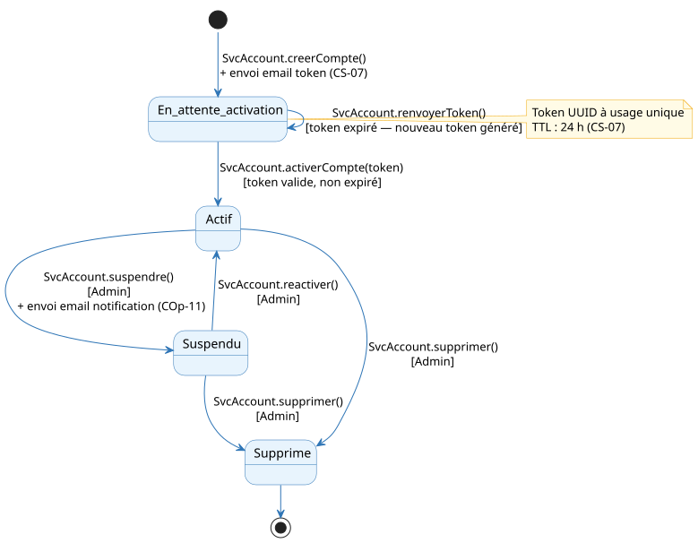
4.10. Modèle de données logique — Compléments LA
La SA a défini les entités métier. La LA précise les entités techniques nécessaires au fonctionnement des composants logiques.
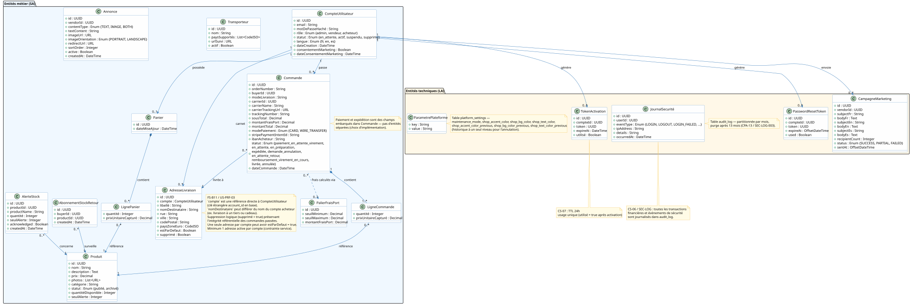
4.11. Matrice de traçabilité SA → LA
| Fonction SA | Description | Composant(s) LA | Interface(s) LA |
|---|---|---|---|
FS-A01 |
Gérer les comptes utilisateurs |
Service Compte |
IFL-01, IFL-13 |
FS-A02 |
Gérer les rôles et droits d’accès |
Service Compte |
IFL-01, IFL-13 |
FS-A03 |
Gérer les transporteurs |
Service Compte, Référentiel |
IFL-01, IFL-13 |
FS-A06 |
Configurer la langue de notification d’un compte |
Service Compte |
IFL-01, IFL-13 |
FS-B01 |
Inscription + envoi email d’activation |
Service Compte, Service Notification, Adaptateur Messagerie |
IFL-01, IFL-09, IFL-12 |
FS-B02 |
Mise à jour du profil acheteur |
Service Compte |
IFL-01, IFL-13 |
FS-B03 |
Afficher et filtrer le catalogue |
Service Catalogue |
IFL-02, IFL-13 |
FS-B04 |
Gérer le panier |
Service Panier |
IFL-03, IFL-13 |
FS-B05 |
Persister et restaurer le panier (CS-03) |
Service Panier, Référentiel |
IFL-03, IFL-13 |
FS-B06 |
Orchestrer le tunnel d’achat |
Service Commande |
IFL-04, IFL-06, IFL-08 |
FS-B07 |
Soumettre le paiement (CS-02) |
Service Paiement, Adaptateur Paiement |
IFL-08, IFL-10 |
FS-B08 |
Afficher le suivi de livraison |
Service Expédition |
IFL-05, IFL-13 |
FS-B09 |
Annuler une commande |
Service Commande |
IFL-04, IFL-08 |
FS-B10 |
Activer le compte via token (CS-07) |
Service Compte |
IFL-01, IFL-13 |
FS-V02 |
Gérer le catalogue produits |
Service Catalogue |
IFL-02, IFL-13 |
FS-V03 |
Gérer les stocks et alertes |
Service Catalogue |
IFL-06, IFL-09, IFL-13 |
FS-V04 |
Traiter les commandes reçues |
Service Commande |
IFL-04, IFL-09, IFL-13 |
FS-V05 |
Déclarer l’expédition avec saisie du numéro de suivi |
Service Expédition |
IFL-05, IFL-09, IFL-13 |
FS-V06 |
Traiter les litiges et réclamations |
Service Commande, Service Paiement |
IFL-04, IFL-08 |
FS-V07 |
Consulter les rapports de ventes |
Service Rapport |
IFL-07, IFL-13 |
FS-V08 |
Traiter les annulations (avant/après expédition, avec/sans renvoi) |
Service Commande |
IFL-04, IFL-08 |
FS-V09 |
Confirmer la réception d’un virement bancaire |
Service Paiement, Service Commande |
IFL-08, IFL-13 |
FS-P01 |
Demander une autorisation de paiement |
Service Paiement, Adaptateur Paiement |
IFL-08, IFL-10 |
FS-P02 |
Confirmer / refuser la transaction (CS-06) |
Service Paiement, Référentiel |
IFL-08, IFL-09, IFL-13 |
FS-P03 |
Déclencher un remboursement |
Service Paiement, Adaptateur Paiement |
IFL-08, IFL-10 |
FS-C01 |
Afficher le numéro de suivi et l’URL du site transporteur à l’acheteur |
Service Expédition |
IFL-05, IFL-13 |
5. Architecture Physique (PA — Physical Architecture)
5.1. Contexte et objectif
L’Architecture Physique (PA) répond à la question : quelles technologies et quelle infrastructure concrète implémentent l’architecture logique ? Elle mappe chaque composant logique de la LA sur un composant physique réel — module de code, conteneur, service cloud — et définit les contraintes de déploiement, de sécurité et de scalabilité.
La PA s’appuie directement sur la LA : les composants logiques identifiés sont affectés à des nœuds de déploiement et des technologies choisies. Les interfaces logiques (IFL) se traduisent ici en protocoles et APIs concrètes.
| Les choix technologiques retenus ci-dessous sont des recommandations architecturales. Ils peuvent être substitués par des équivalents fonctionnels sans remettre en cause les frontières logiques définies en LA. |
5.2. Contraintes physiques (CPA)
Les contraintes physiques complètent les contraintes système (CS) en ajoutant les exigences d’infrastructure et de déploiement.
| Identifiant | Contrainte physique | Description |
|---|---|---|
CPA-01 |
Déploiement conteneurisé |
Chaque composant déployable est encapsulé dans un conteneur Docker. L’orchestration locale utilise Docker Compose (développement) et Kubernetes (production). |
CPA-02 |
HTTPS obligatoire |
Toutes les communications réseau utilisent TLS 1.2 minimum. La terminaison TLS est assurée par le reverse proxy (Nginx). |
CPA-03 |
Transactions ACID |
La base de données relationnelle (PostgreSQL) garantit l’intégrité des opérations critiques — commandes, paiements, réservations de stock. |
CPA-04 |
Cache distribué pour les sessions |
La persistance du panier (CS-03) et la gestion des sessions utilisateur sont déportées dans Redis, indépendamment du serveur d’application (scalabilité horizontale possible). |
CPA-05 |
Serveur d’application stateless |
Le serveur d’application ne stocke aucun état en mémoire locale. Tout l’état métier est externalisé dans PostgreSQL ou Redis. |
CPA-06 |
Environnements séparés |
Trois environnements distincts : développement (local Docker Compose), staging (pré-production), production. |
CPA-07 |
Journalisation des transactions financières |
Toutes les transactions (paiement, remboursement) sont journalisées en base avec horodatage, montant, statut et référence prestataire — issu de CS-06. |
CPA-08 |
Implémentation de la TokenAuthentification (CS-08) |
Les jetons sont signés avec HMAC-SHA-256 (JJWT), ont une validité de 24 h et sont transmis dans l’en-tête |
5.3. Pile technologique retenue
5.3.1. Présentation
| Composant logique (LA) | Technologie PA | Détails |
|---|---|---|
Portail Acheteur |
React 18 — TypeScript — Vite |
SPA responsive (CS-01), servie par Nginx ; routes client-side, appels vers l’API REST |
Back-office Vendeur |
React 18 — TypeScript — Vite |
SPA desktop-first, accès HTTPS authentifié par JWT |
Console Administrateur |
React 18 — TypeScript — Vite |
SPA desktop-first, accès HTTPS authentifié par jeton JWT (CS-08 / CPA-08) ; gestion des comptes et transporteurs |
5.3.2. Application et domaine
| Composant logique (LA) | Technologie PA | Détails |
|---|---|---|
Service Compte |
Module Spring Boot (Java) |
Authentification JWT — Spring Security + JJWT (CS-08 / CPA-08), hachage BCrypt, gestion des tokens d’activation (CS-07) |
Service Catalogue |
Module Spring Boot (Java) |
CRUD produits et stock, recherche textuelle via Hibernate / PostgreSQL full-text search |
Service Panier |
Module Spring Boot (Java) + Redis |
Données de session dans Redis (TTL court, Spring Data Redis) ; sauvegarde persistante via Hibernate (CS-03 / CPA-04) |
Service Commande |
Module Spring Boot (Java) |
Orchestration transactionnelle (Spring Data JPA / Hibernate), gestion du cycle de vie des commandes |
Service Paiement |
Module Spring Boot (Java) |
Soumission via Stripe Java SDK, réception webhooks signés, journalisation (CS-06 / CPA-07) |
Service Expédition |
Module Spring Boot (Java) |
Enregistrement du numéro de suivi saisi par le vendeur, exposition du numéro de suivi et de l’URL du site transporteur à l’acheteur (IFS-05 — lien sortant uniquement) |
Service Notification |
Module Spring Boot (Java) |
Envoi des emails transactionnels via SendGrid Java SDK ; sélection du template par langue du destinataire ( |
Service Rapport |
Module Spring Boot (Java) |
Requêtes JPQL agrégées, génération de statistiques de ventes |
5.3.3. Intégrations externes
| Composant logique (LA) | Technologie PA | Détails |
|---|---|---|
Adaptateur Paiement |
Stripe Java SDK |
Appels sortants REST/HTTPS vers Stripe API ; réception de webhooks signés (IFS-04) |
Adaptateur Messagerie |
SendGrid Java SDK |
Envoi d’emails transactionnels via l’API HTTP SendGrid (IFS-06) |
5.3.4. Infrastructure
| Composant logique (LA) | Technologie PA | Détails |
|---|---|---|
Référentiel de données |
PostgreSQL 16 |
Base de données principale — toutes les entités métier ; migrations gérées via Flyway |
— (cache et sessions) |
Redis 7 |
Persistance des paniers en session (CS-03 / CPA-04) ; révocation des tokens JWT |
— (reverse proxy) |
Nginx |
Terminaison TLS (CPA-02), service des SPA statiques, proxy vers API, rate limiting |
— (conteneurisation) |
Docker / Docker Compose / Kubernetes |
Isolation des composants (CPA-01), déploiements reproductibles par environnement (CPA-06) |
5.4. Diagramme de déploiement
Ce diagramme représente la topologie des nœuds physiques et l’allocation des composants logiques aux conteneurs Docker.
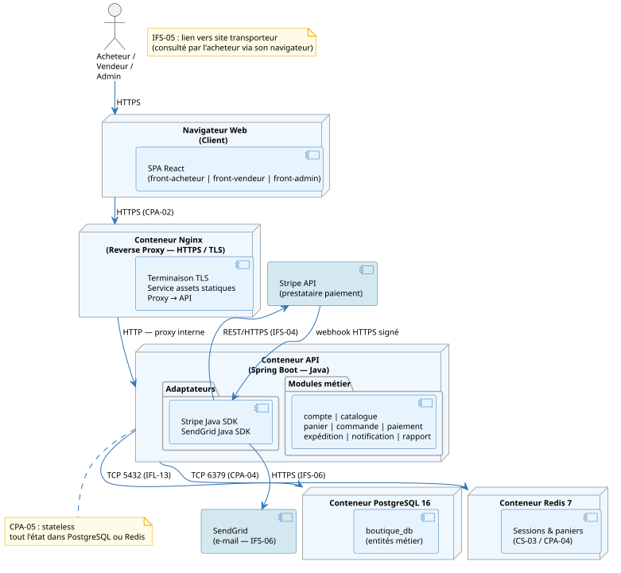
5.5. Diagramme de composants physiques
Ce diagramme représente les modules de code et leurs dépendances, regroupés par conteneur de déploiement.
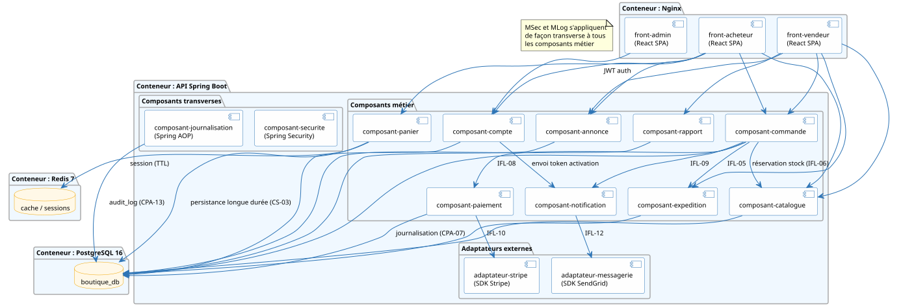
5.6. Diagramme de séquence technique — Tunnel d’achat et paiement Stripe
Ce diagramme représente les échanges techniques complets lors de la passation d’une commande, depuis la SPA React jusqu’aux systèmes externes, en faisant apparaître les protocoles, SDK et conventions API concrètes.
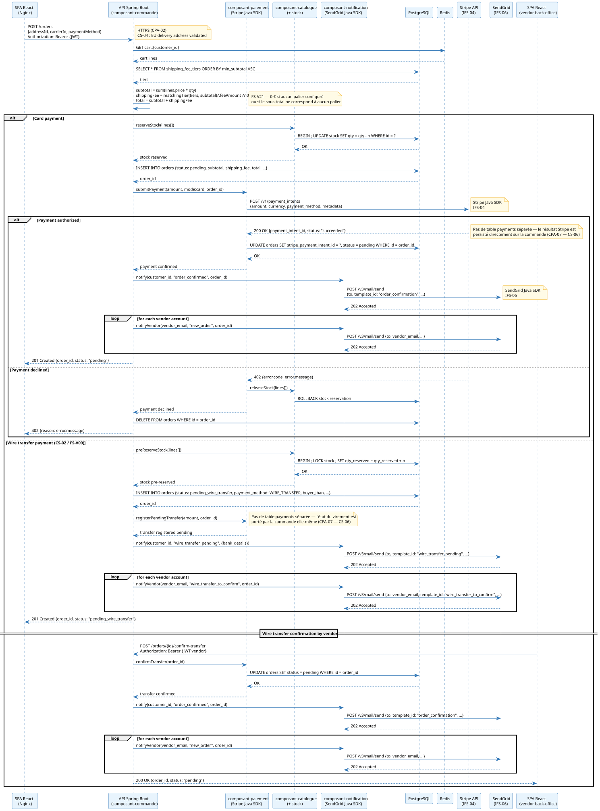
5.7. Diagramme de séquence technique — Expédition et suivi de commande
Ce diagramme représente le flux technique d’expédition d’une commande : le vendeur saisit le numéro de suivi récupéré lors du dépôt physique, le système l’enregistre et notifie l’acheteur qui peut consulter son colis sur le site du transporteur.
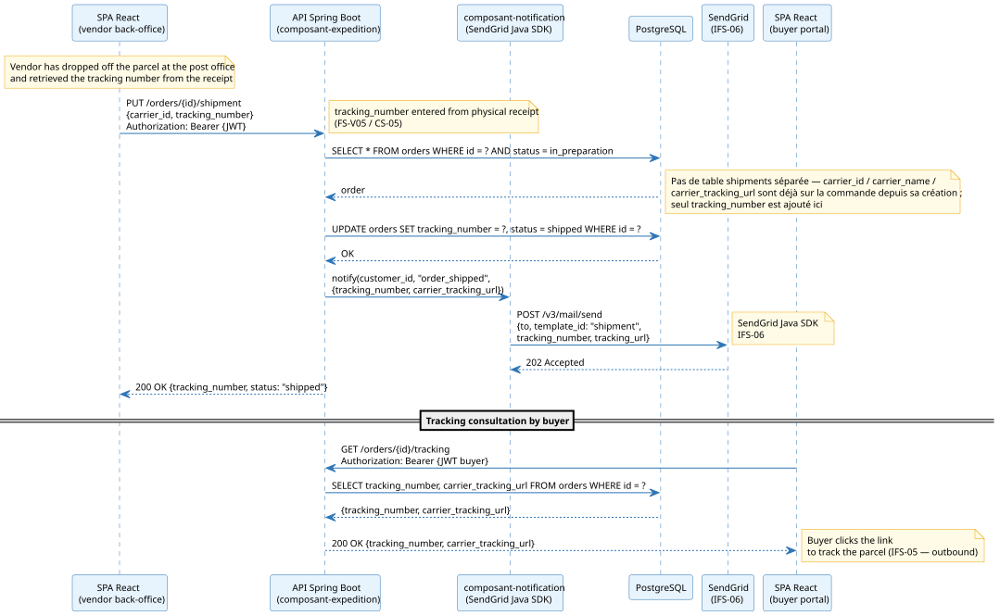
5.8. Diagramme de séquence technique — Création de compte par l’admin et activation
Deux acteurs distincts interviennent : l’administrateur qui crée le compte, et le nouvel utilisateur qui reçoit l’email et définit son mot de passe. Le compte reste en statut PENDING jusqu’à l’activation (US-ADM-01 / FS-A01 / CS-07).
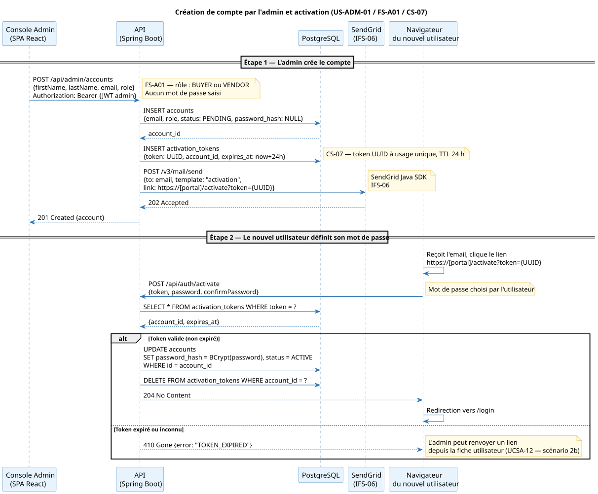
5.9. Diagramme de séquence technique — Auto-inscription acheteur et activation
L’acheteur choisit son mot de passe dès l’inscription ; l’email d’activation sert uniquement à vérifier l’adresse. Le token d’activation ne transporte pas de mot de passe — seul l’acheteur en est porteur (US-REG-01 / US-REG-02 / FS-B01 / CS-07).
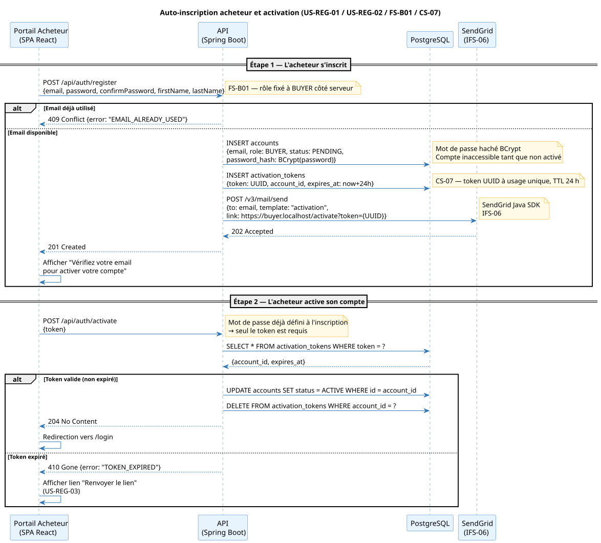
5.10. Maquettes IHM
Les maquettes filaires ci-dessous illustrent les interfaces utilisateur de chaque composant frontend. Elles sont rattachées aux fonctions logiques (LA) allouées à chaque composant et restent indépendantes de toute charte graphique — Salt modélise la structure, non le rendu final.
5.10.1. Portail Acheteur
Connexion
Formulaire d’authentification (FS-B01). Le lien « Mot de passe oublié » déclenche un email de réinitialisation via IFS-06. La case « Se souvenir de moi » prolonge la durée du token JWT stocké dans Redis (CPA-04).
Inscription
Ce formulaire couvre FS-B01 (création de compte) et FS-B10 (activation par email). Après soumission, l’acheteur reçoit un email avec le lien d’activation tokenisé (CS-07). Le compte reste inaccessible tant que le lien n’a pas été cliqué.
Activation de compte
Page atteinte depuis le lien envoyé par email (CS-07). Deux cas d’usage convergent ici : l’acheteur auto-inscrit (US-REG-02 — seul le token est requis, le mot de passe étant déjà défini) et le compte créé par l’admin (US-ADM-01 — l’utilisateur doit définir son mot de passe via ce formulaire). La maquette couvre le second cas, plus complet. Si le token est expiré, la page propose un lien de renvoi (US-REG-03).
Page d’accueil
La page d’accueil est le point d’entrée de la boutique pour tout internaute non encore connecté ou souhaitant parcourir le catalogue. Elle affiche en haut un carrousel d’annonces défilantes (FS-V11), suivi d’un accès direct au catalogue.
Carrousel d’annonces :
-
Une seule annonce est visible à la fois ; le défilement est automatique (intervalle configurable) et peut être contrôlé manuellement via les flèches
</>. -
Chaque annonce peut contenir un texte, une image ou les deux, selon la configuration du vendeur.
-
Si un lien est renseigné, l’ensemble du bloc annonce est cliquable et redirige l’internaute vers ce lien.
-
Les indicateurs de position (● ○ ○) reflètent le nombre d’annonces et la position courante.
-
Si aucune annonce n’est configurée, le carrousel est masqué et le catalogue s’affiche directement.
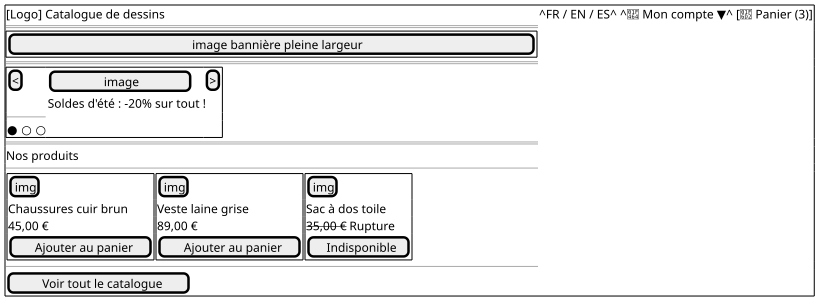
Catalogue produits
Écran principal d’exploration du catalogue (FS-B03). La barre de filtres (catégorie, prix maximum) et la barre de recherche textuelle correspondent aux critères de filtrage définis en SA. Le bouton « Ajouter au panier » déclenche FS-B04 ; les produits en rupture sont affichés mais non ajoutables.
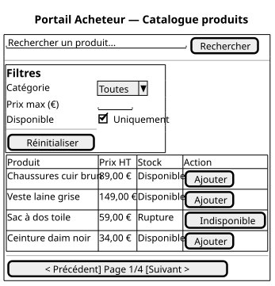
Détail produit
Page de détail d’un produit (FS-B03 / FS-B04). Affiche le prix (TTC), la disponibilité issue du stock fusionné dans Produit, et un sélecteur de quantité. L’ajout au panier est bloqué si le stock est à zéro.
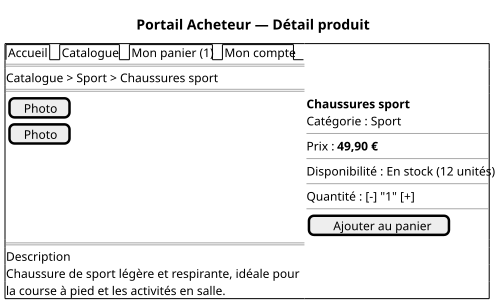
Panier
Affichage et modification du panier courant (FS-B04 / FS-B05 / CS-03). Les modifications de quantité sont persistées en base immédiatement. Le bouton « Valider le panier » amorce le tunnel d’achat.
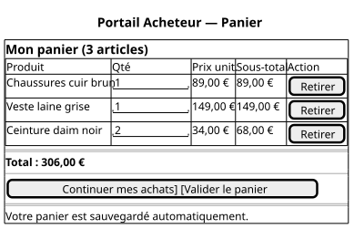
Tunnel d’achat — Adresse et livraison
Étape 1/3 du tunnel (FS-B06). La liste déroulante de pays est restreinte aux pays de la zone euro (CS-04). Les modes de livraison sont alimentés par les transporteurs configurés par l’administrateur (FS-A03).
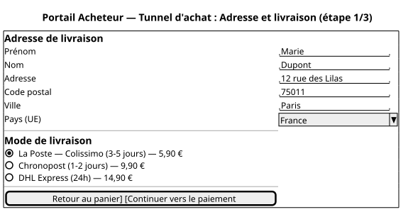
Tunnel d’achat — Paiement
Étape 2/3 du tunnel (FS-B07 / CS-02). Le récapitulatif de commande est figé à ce stade. L’acheteur choisit entre carte bancaire (autorisation immédiate via Stripe Java SDK — IFS-04) ou virement bancaire (commande créée en état paiement_en_attente_virement). En cas de carte, les données sont transmises directement au SDK Stripe sans transiter en clair par le backend (PCI-DSS).
Confirmation de commande
Écran terminal du tunnel d’achat (FS-B06). Affiche la référence de commande, le statut initial et la livraison estimée. Un email de confirmation est envoyé simultanément via SendGrid (IFS-06).
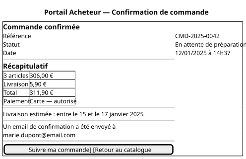
Commande en attente de virement
Affiché après création d’une commande en mode virement bancaire (FS-B07 / CS-02). Présente les coordonnées bancaires du vendeur et la référence à inclure dans le libellé du virement. La commande reste en état paiement_en_attente_virement jusqu’à confirmation manuelle du vendeur (FS-V09).
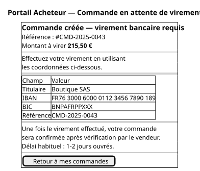
Suivi de commande
Accès au numéro de suivi et au lien vers le site du transporteur (FS-B08 / FS-C01 / CS-05). Le lien est une URL sortante — le suivi de l’acheminement s’effectue directement sur le site du transporteur (IFS-05). L’acheteur peut déclencher une annulation ou une réclamation depuis cet écran.
Annulation d’une commande
Écran de demande d’annulation avant expédition (FS-B09). Rappelle le contenu de la commande et son statut. Le motif est optionnel. Si la commande a été réglée par carte, le remboursement est déclenché automatiquement via le prestataire (FS-P03) après acceptation vendeur. Si la commande a été réglée par virement, un champ « IBAN de remboursement » est affiché et obligatoire : l’acheteur doit fournir son RIB pour permettre au vendeur d’émettre un virement inverse (FS-V10).
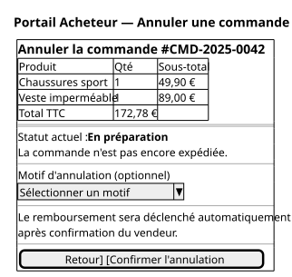
Réclamation
Formulaire de dépôt d’une réclamation post-livraison (FS-V06). Le motif sélectionné oriente le traitement côté vendeur. La réclamation est créée en état ouverte ; le vendeur dispose d’un délai pour répondre avant escalade.
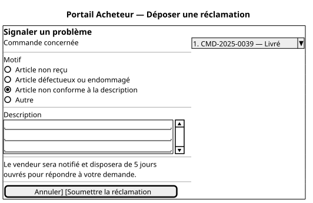
Mon compte
Gestion du profil acheteur (FS-B02). Réunit sur trois onglets les informations personnelles, l’adresse de livraison par défaut et la modification du mot de passe. La mise à jour de l’email est soumise à validation d’unicité côté Service Compte. L’onglet « Informations personnelles » inclut un champ Langue (liste déroulante Français / English) permettant à l’acheteur de configurer la langue de ses emails de notification (CS-10).
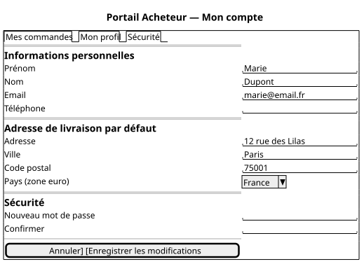
5.10.2. Back-office Vendeur
Tableau de bord
Vue synthétique de l’activité (FS-V04 / FS-V07). Les compteurs en haut de page agrègent les commandes par statut. La liste des dernières commandes permet d’accéder directement aux actions critiques : traiter une commande en attente, déclarer une expédition, confirmer un virement.
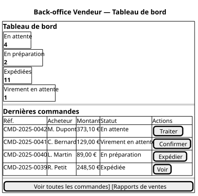
Détail d’une commande
Vue complète d’une commande avec toutes ses lignes (FS-V04 / FS-V08). Présente les informations acheteur, l’adresse de livraison, le détail des LigneCommande et le statut du paiement. Les actions disponibles dépendent du statut courant.
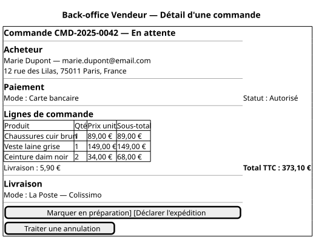
Déclaration d’expédition
Formulaire de déclaration d’expédition (FS-V05 / CS-05). Le champ « Numéro de suivi » est obligatoire — la soumission est bloquée s’il est vide. Ce numéro est récupéré sur le reçu de dépôt physique ; il n’est jamais généré par le système. La liste des transporteurs est alimentée par les données configurées en console admin (FS-A03).
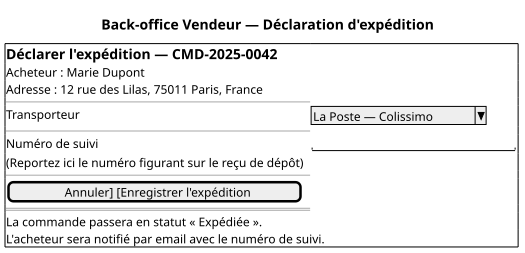
Annulation après expédition
Écran de traitement d’une demande d’annulation reçue après expédition (FS-V08). Le vendeur choisit entre trois options : accepter avec condition de renvoi (commande → en_attente_retour), accepter sans condition de renvoi (remboursement immédiat), ou refuser. Les conséquences de chaque choix sont explicitées inline pour éviter les erreurs.
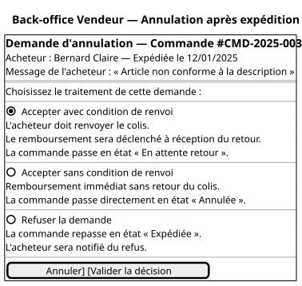
Confirmation de virement bancaire
Écran dédié à la confirmation manuelle des virements (FS-V09 / CS-02). Liste toutes les commandes en état paiement_en_attente_virement. Le vendeur doit vérifier son relevé bancaire avant de confirmer. La confirmation passe la commande en en_attente et notifie l’acheteur (IFS-06). Le rejet annule la commande et libère le stock pré-réservé.
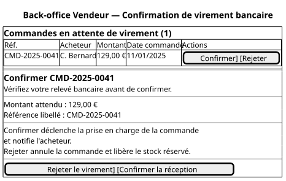
Gestion du catalogue
Liste paginée des produits avec indicateurs de stock en ligne (FS-V02 / FS-V03). Le stock et le seuil d’alerte sont affichés directement dans la liste (fusion Produit/Stock). Les produits sous le seuil d’alerte ou en rupture sont signalés visuellement. L’archivage est bloqué si le produit est référencé dans une commande active.
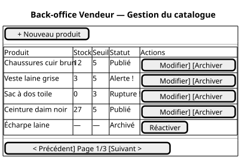
Édition d’un produit
Formulaire de création et de modification d’un produit (FS-V02 / FS-V03). Les champs Quantité disponible et Seuil d’alerte sont intégrés directement dans le formulaire produit, conformément à la fusion Produit/Stock opérée en LA. Le statut Archivé retire le produit du catalogue acheteur sans le supprimer.
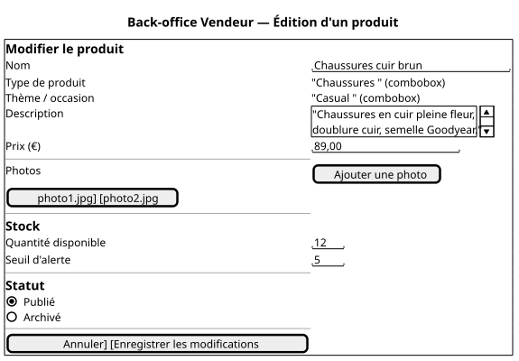
Gestion des réclamations
Vue de traitement des réclamations acheteurs (FS-V06). L’onglet « Ouvertes » liste les réclamations en attente de réponse vendeur avec le détail du message acheteur. Le vendeur peut rembourser via le prestataire de paiement (FS-P03) ou rejeter la demande. La réclamation passe en statut clôturée dans les deux cas.
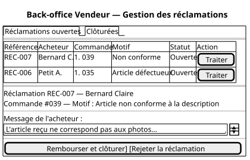
Annonces défilantes
Gestion du carrousel d’annonces affiché sur la page d’accueil (FS-V11). Chaque annonce est composée d’un texte, d’une image ou des deux. Un lien de redirection optionnel est associé : un clic de l’internaute sur l’annonce déclenche la navigation vers ce lien. Les annonces sont triées par ordre croissant ; les boutons ↑ / ↓ modifient l’ordre. La suppression est immédiate et retire l’annonce du carrousel sans confirmation.
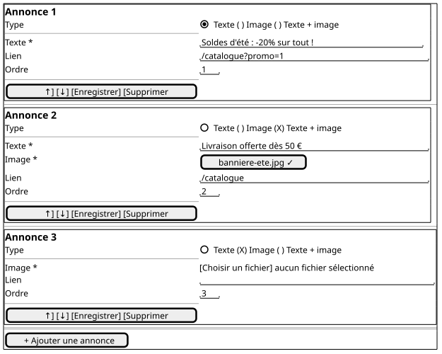
Rapports de ventes
Tableau de bord analytique (FS-V07). Les indicateurs clés (CA, nombre de commandes, panier moyen, taux d’annulation) sont calculés par des requêtes JPQL agrégées sur la période sélectionnée. Le classement des produits est dérivé des LigneCommande. L’export CSV génère un fichier téléchargeable côté client.
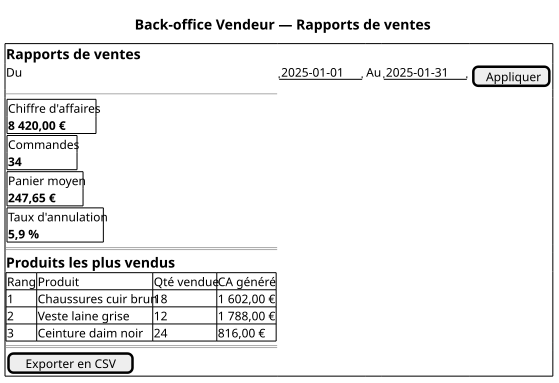
5.10.3. Console Administrateur
Connexion
Formulaire d’authentification de l’administrateur (CS-08 / CPA-08). Le système vérifie les identifiants, contrôle que le compte est actif et porte le rôle ADMIN, puis émet un jeton JWT signé valable 24 h. Le message d’erreur est délibérément générique pour éviter l’énumération de comptes.
Gestion des comptes
Liste de tous les comptes utilisateurs (FS-A01 / FS-A02). Les filtres par rôle et par statut permettent de cibler rapidement les comptes en attente d’activation ou suspendus. Les actions disponibles varient selon le statut : un compte suspendu peut être réactivé ; un compte en attente peut être supprimé.
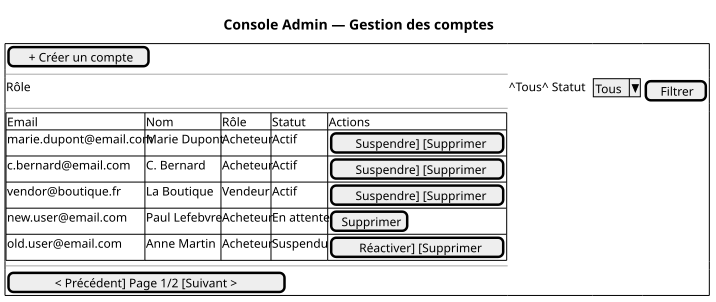
Formulaire de création de compte
Formulaire modal déclenché par le bouton « + Créer un compte » de la liste (FS-A01). Conforme à US-ADM-01 : l’administrateur saisit le prénom, le nom, l’email, le rôle et la langue de notification (FS-A06 / CS-10) — aucun mot de passe n’est demandé. La langue est initialisée à Français par défaut. À la soumission, le système crée le compte avec le statut EN_ATTENTE_ACTIVATION et envoie automatiquement un email d’activation dans la langue choisie (CS-07 / CS-10). Le lien expire après 24 h ; l’administrateur peut le renvoyer depuis la liste si nécessaire.
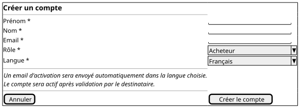
Fiche d’un compte
Écran de détail d’un compte existant, accessible depuis le bouton « Modifier » de la liste (FS-A01 / FS-A06). Affiche les informations du compte en lecture seule (email, rôle, statut) et expose le champ Langue en édition (CS-10). L’administrateur peut mettre à jour la préférence de langue de notification sans modifier les autres données du compte. La modification est effective immédiatement pour les prochains emails sortants.
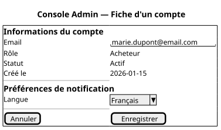
Gestion des transporteurs
Configuration des transporteurs disponibles sur la plateforme (FS-A03). La désactivation masque le transporteur lors de la déclaration d’expédition sans supprimer les expéditions existantes. La suppression est bloquée si des expéditions actives référencent ce transporteur.
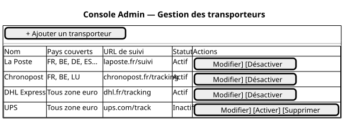
Formulaire transporteur
Formulaire d’ajout et d’édition d’un transporteur (FS-A03). Les pays couverts sont restreints aux pays de la zone euro (CS-04). L’URL de suivi est utilisée par le portail acheteur pour construire le lien IFS-05 (CS-05). La désactivation (Actif : Non) masque le transporteur du back-office vendeur sans le supprimer.
5.11. Matrice de traçabilité LA → PA
| Composant logique (LA) | Module physique (PA) | Nœud de déploiement | Technologie |
|---|---|---|---|
Portail Acheteur |
front-acheteur |
Conteneur Nginx |
React 18 / TypeScript / Vite |
Back-office Vendeur |
front-vendeur |
Conteneur Nginx |
React 18 / TypeScript / Vite |
Console Administrateur |
front-admin |
Conteneur Nginx |
React 18 / TypeScript / Vite |
Service Compte |
module-compte |
Conteneur API Spring Boot |
Spring Boot / Spring Security / JWT |
Service Catalogue |
module-catalogue |
Conteneur API Spring Boot |
Spring Boot / Spring Data JPA / Hibernate |
Service Panier |
module-panier |
Conteneur API Spring Boot + Redis |
Spring Boot / Spring Data Redis |
Service Commande |
module-commande |
Conteneur API Spring Boot |
Spring Boot / Spring Data JPA / Hibernate |
Service Paiement |
module-paiement |
Conteneur API Spring Boot |
Spring Boot / Stripe Java SDK |
Service Expédition |
module-expedition |
Conteneur API Spring Boot |
Spring Boot / Spring Data JPA / Hibernate |
Service Notification |
module-notification |
Conteneur API Spring Boot |
Spring Boot / SendGrid Java SDK |
Service Rapport |
module-rapport |
Conteneur API Spring Boot |
Spring Boot / Spring Data JPA / JPQL |
Adaptateur Paiement |
module-paiement (couche adaptateur) |
Conteneur API Spring Boot |
Stripe Java SDK |
Adaptateur Messagerie |
module-notification (couche adaptateur) |
Conteneur API Spring Boot |
SendGrid Java SDK |
Référentiel de données |
boutique_db |
Conteneur PostgreSQL 16 |
PostgreSQL 16 / Flyway |
6. Backlog — User Stories
6.1. Contexte
Ce document liste l’ensemble des user stories dérivées des fonctions système (FS) définies en SA et allouées en LA/PA. Chaque user story est tracée vers les éléments ARCADIA dont elle est issue.
Les user stories sont regroupées par domaine fonctionnel et ordonnées selon les dépendances d’implémentation (les stories d’infrastructure avant celles de fonctionnalité).
Le statut de chaque story est à renseigner dans la colonne « Statut » au fil du développement. Valeurs suggérées : À faire / En cours / Terminée.
|
6.2. Gestion des comptes (Admin)
Fonctions ARCADIA : FS-A01, FS-A02, FS-A03 — UCSA-12 — LA : Console Administrateur / Service Compte
| ID | User story | Critères d’acceptation | Statut |
|---|---|---|---|
US-ADM-01 |
En tant qu’administrateur, je peux créer un compte acheteur ou vendeur depuis la console d’administration. |
|
Terminée |
US-ADM-02 |
En tant qu’administrateur, je peux suspendre un compte actif (acheteur ou vendeur). |
|
Terminée |
US-ADM-03 |
En tant qu’administrateur, je peux réactiver un compte suspendu. |
|
Terminée |
US-ADM-04 |
En tant qu’administrateur, je peux supprimer un compte (actif ou suspendu). |
|
Terminée |
US-ADM-05 |
En tant qu’administrateur, je peux modifier le rôle d’un utilisateur (acheteur ↔ vendeur). |
|
Terminée |
US-ADM-06 |
En tant qu’administrateur, je peux ajouter un transporteur avec son nom, les pays de la zone euro couverts et l’URL de son site de suivi. |
|
Terminée |
US-ADM-07 |
En tant qu’administrateur, je peux modifier les informations d’un transporteur existant. |
|
Terminée |
US-ADM-08 |
En tant qu’administrateur, je peux désactiver un transporteur sans le supprimer. |
|
Terminée |
US-ADM-09 |
En tant qu’administrateur, je peux supprimer un transporteur qui n’est référencé dans aucune expédition active. |
|
Terminée |
6.3. Inscription et activation de compte
Fonctions ARCADIA : FS-B01, FS-B10, CS-07 — UCSA-01 — LA : Service Compte / Service Notification / Adaptateur Messagerie
| ID | User story | Critères d’acceptation | Statut |
|---|---|---|---|
US-REG-01 |
En tant que visiteur, je peux créer un compte acheteur en saisissant mon email, mon mot de passe et mes informations de profil. |
|
Terminée |
US-REG-02 |
En tant que nouvel acheteur, je peux activer mon compte en cliquant sur le lien reçu par email. |
|
En cours |
US-REG-03 |
En tant que nouvel acheteur dont le token a expiré, je peux demander le renvoi d’un nouveau lien d’activation. |
|
À faire |
6.4. Gestion du profil
Fonctions ARCADIA : FS-B02, FS-V01 — UCSA-02 — LA : Service Compte
| ID | User story | Critères d’acceptation | Statut |
|---|---|---|---|
US-PRF-01 |
En tant qu’acheteur authentifié, je peux modifier mes informations personnelles (nom, adresse de livraison par défaut, mot de passe). |
|
À faire |
US-PRF-02 |
En tant que vendeur authentifié, je peux modifier mes informations personnelles (nom, adresse, mot de passe, coordonnées). |
|
À faire |
6.5. Catalogue produits — Vendeur
Fonctions ARCADIA : FS-V02, FS-V03 — UCSA-10 — LA : Service Catalogue
| ID | User story | Critères d’acceptation | Statut |
|---|---|---|---|
US-CAT-01 |
En tant que vendeur, je peux créer une fiche produit avec nom, description, prix HT, photos, catégorie, quantité disponible et seuil d’alerte de stock. |
|
À faire |
US-CAT-02 |
En tant que vendeur, je peux modifier une fiche produit existante. |
|
À faire |
US-CAT-03 |
En tant que vendeur, je peux archiver un produit pour le retirer du catalogue sans le supprimer. |
|
À faire |
US-CAT-04 |
En tant que vendeur, je peux consulter et mettre à jour les niveaux de stock de mes produits et définir un seuil d’alerte. |
|
À faire |
US-CAT-05 |
En tant que vendeur, je reçois une notification lorsque le stock d’un produit passe en dessous de son seuil d’alerte. |
|
À faire |
6.6. Catalogue produits — Acheteur
Fonctions ARCADIA : FS-B03 — UCSA-03 — LA : Service Catalogue
| ID | User story | Critères d’acceptation | Statut |
|---|---|---|---|
US-SHP-01 |
En tant que visiteur (connecté ou non), je peux parcourir les produits publiés du catalogue. |
|
À faire |
US-SHP-02 |
En tant qu’acheteur, je peux filtrer les produits par catégorie, prix maximum et disponibilité, et effectuer une recherche textuelle. |
|
À faire |
6.7. Panier
Fonctions ARCADIA : FS-B04, FS-B05, CS-03 — UCSA-04 — LA : Service Panier
| ID | User story | Critères d’acceptation | Statut |
|---|---|---|---|
US-CRT-01 |
En tant qu’acheteur authentifié, je peux ajouter des produits à mon panier, modifier les quantités et retirer des articles. |
|
À faire |
US-CRT-02 |
En tant qu’acheteur authentifié, mon panier est automatiquement sauvegardé et intégralement restauré à ma reconnexion. |
|
À faire |
6.8. Tunnel d’achat et paiement
Fonctions ARCADIA : FS-B06, FS-B07, FS-P01, FS-P02, CS-02, CS-04 — UCSA-05 — LA : Service Commande / Service Paiement / Adaptateur Paiement
| ID | User story | Critères d’acceptation | Statut |
|---|---|---|---|
US-ORD-01 |
En tant qu’acheteur, je peux saisir une adresse de livraison restreinte aux pays de la zone euro. |
|
À faire |
US-ORD-02 |
En tant qu’acheteur, je peux choisir un mode de livraison parmi les transporteurs actifs couvrant mon pays de destination. |
|
À faire |
US-ORD-03 |
En tant qu’acheteur, je peux régler ma commande par carte bancaire avec autorisation immédiate via Stripe. |
|
À faire |
US-ORD-04 |
En tant qu’acheteur, je peux régler ma commande par virement bancaire ; je reçois les coordonnées bancaires du vendeur et ma commande est placée en attente de confirmation. |
|
À faire |
US-ORD-05 |
En tant qu’acheteur, je reçois un email de confirmation après validation de ma commande. |
|
À faire |
6.9. Gestion des commandes — Vendeur
Fonctions ARCADIA : FS-V04, FS-V09 — UCSA-07, UCSA-13 — LA : Service Commande / Service Paiement
| ID | User story | Critères d’acceptation | Statut |
|---|---|---|---|
US-VND-01 |
En tant que vendeur, je suis notifié des nouvelles commandes et je peux les consulter dans mon tableau de bord. |
|
À faire |
US-VND-02 |
En tant que vendeur, je peux confirmer la réception d’un virement bancaire pour déclencher la prise en charge de la commande. |
|
À faire |
6.10. Expédition et suivi
Fonctions ARCADIA : FS-V05, FS-B08, FS-C01, CS-05 — UCSA-07, UCSA-08 — LA : Service Expédition
| ID | User story | Critères d’acceptation | Statut |
|---|---|---|---|
US-EXP-01 |
En tant que vendeur, je peux déclarer l’expédition d’une commande en saisissant le numéro de suivi récupéré sur le reçu de dépôt physique auprès du transporteur. |
|
À faire |
US-EXP-02 |
En tant qu’acheteur, je peux consulter le numéro de suivi de ma commande et accéder au site du transporteur depuis mon espace commandes. |
|
À faire |
6.11. Annulation de commande
Fonctions ARCADIA : FS-B09, FS-V08, FS-P03 — UCSA-06 — LA : Service Commande / Service Paiement
| ID | User story | Critères d’acceptation | Statut |
|---|---|---|---|
US-CAN-01 |
En tant qu’acheteur, je peux annuler une commande en attente ou en préparation depuis mon espace commandes sans que le vendeur puisse s’y opposer. |
|
À faire |
US-CAN-02 |
En tant que vendeur, je suis notifié d’une annulation avant expédition et dois procéder au remboursement si le paiement était par virement. |
|
À faire |
US-CAN-03 |
En tant que vendeur, je peux accepter une annulation après expédition en exigeant le renvoi préalable du colis. |
|
À faire |
US-CAN-04 |
En tant que vendeur, je peux accepter une annulation après expédition sans exiger le retour du colis. |
|
À faire |
US-CAN-05 |
En tant que vendeur, je peux confirmer l’émission d’un virement inverse de remboursement vers l’acheteur. |
|
À faire |
6.12. Litiges et réclamations
Fonctions ARCADIA : FS-V06, FS-P03 — UCSA-09 — LA : Service Commande / Service Paiement
| ID | User story | Critères d’acceptation | Statut |
|---|---|---|---|
US-CLM-01 |
En tant qu’acheteur, je peux ouvrir une réclamation depuis mon espace commandes en précisant le motif. |
|
À faire |
US-CLM-02 |
En tant que vendeur, je peux consulter les réclamations ouvertes et décider d’accorder ou de refuser un remboursement. |
|
À faire |
6.13. Rapports de ventes
Fonctions ARCADIA : FS-V07 — UCSA-11 — LA : Service Rapport
| ID | User story | Critères d’acceptation | Statut |
|---|---|---|---|
US-RPT-01 |
En tant que vendeur, je peux consulter les indicateurs de ventes sur une période donnée et exporter les données. |
|
À faire |
6.14. Matrice de traçabilité FS → User Stories
| Fonction SA | Description | User Stories |
|---|---|---|
FS-A01 |
Créer, suspendre et supprimer les comptes |
US-ADM-01, US-ADM-02, US-ADM-03, US-ADM-04 |
FS-A02 |
Gérer les rôles et droits d’accès |
US-ADM-05 |
FS-A03 |
Gérer les transporteurs |
US-ADM-06, US-ADM-07, US-ADM-08, US-ADM-09 |
FS-B01 |
Inscription + envoi email d’activation |
US-REG-01 |
FS-B02 |
Mise à jour du profil acheteur |
US-PRF-01 |
FS-B03 |
Afficher et filtrer le catalogue |
US-SHP-01, US-SHP-02 |
FS-B04 |
Gérer le panier |
US-CRT-01 |
FS-B05 |
Persister et restaurer le panier |
US-CRT-02 |
FS-B06 |
Orchestrer le tunnel d’achat |
US-ORD-01, US-ORD-02 |
FS-B07 |
Soumettre le paiement (carte ou virement) |
US-ORD-03, US-ORD-04 |
FS-B08 |
Afficher le suivi de livraison |
US-EXP-02 |
FS-B09 |
Annuler une commande (acheteur) |
US-CAN-01 |
FS-B10 |
Activer le compte via token |
US-REG-02, US-REG-03 |
FS-V01 |
Mise à jour du profil vendeur |
US-PRF-02 |
FS-V02 |
Gérer le catalogue produits |
US-CAT-01, US-CAT-02, US-CAT-03 |
FS-V03 |
Gérer les stocks et alertes |
US-CAT-04, US-CAT-05 |
FS-V04 |
Traiter les commandes reçues |
US-VND-01 |
FS-V05 |
Déclarer l’expédition avec numéro de suivi |
US-EXP-01 |
FS-V06 |
Traiter les litiges et réclamations |
US-CLM-01, US-CLM-02 |
FS-V07 |
Consulter les rapports de ventes |
US-RPT-01 |
FS-V08 |
Traiter les annulations (avant/après expédition) |
US-CAN-02, US-CAN-03, US-CAN-04 |
FS-V09 |
Confirmer la réception d’un virement bancaire |
US-VND-02 |
FS-C01 |
Afficher le n° de suivi et l’URL transporteur |
US-EXP-02 |
FS-P01 |
Demander une autorisation de paiement |
US-ORD-03 |
FS-P02 |
Confirmer / refuser la transaction |
US-ORD-03, US-ORD-05 |
FS-P03 |
Déclencher un remboursement |
US-CAN-02, US-CAN-03, US-CAN-04, US-CLM-02 |
7. Glossaire
| Terme | Définition |
|---|---|
ARCADIA |
Architecture Analysis and Design Integrated Approach. Méthode MBSE structurant l’architecture en quatre niveaux : OA, SA, LA, PA. |
MBSE |
Model-Based Systems Engineering. Approche d’ingénierie système centrée sur des modèles formels plutôt que sur des documents textuels. |
OA |
Operational Analysis. Niveau 1 d’ARCADIA : décrit le contexte métier, les acteurs opérationnels et leurs activités. |
SA |
System Analysis. Niveau 2 d’ARCADIA : décrit les fonctions que le système doit rendre aux acteurs. |
LA |
Logical Architecture. Niveau 3 d’ARCADIA : décomposition logique du système en composants et interfaces. |
PA |
Physical Architecture. Niveau 4 d’ARCADIA : décomposition physique et logicielle, nœuds de déploiement. |
PlantUML |
Outil de génération de diagrammes à partir d’une syntaxe textuelle. |
AsciiDoc |
Format de balisage léger utilisé pour la rédaction de la documentation. |